|
JIM O’ROURKE DISCOGRAPHY
1988–2006
|
|
Notes
This should be pretty much complete through 2006. Most 2007
releases are also included, plus a few from 2008. For more recent
info, visit Discogs.com.
Corrections and additional information on anything listed, or
anything released prior to 2007 but not listed, are welcome at the
above E-mail address.
Dates are release dates, not recording dates. Click on
cover art for larger version.
I am not Jim’s agent or secretary, nor do I know who is. If
you are trying to get in touch with him, through me is not the way.
Links
Mark Martucci has an all-things-O’Rourke site
up that is new and growing. Happy Days is an O’Rourke site in Japanese with discography, pictures, and other info, but last
time I checked it hadn’t been updated since 2002.
There are two O’Rourke discussion groups at Yahoo
(jim-orourkelist,
jimorourkeisbeautiful).
The latter was formerly a “girls only worship
center” but is now “SERIOUS”.
Jim has a very short personal page up
at the Sonic Youth site. An old site by Jim, Hoobalaboobala,
has been offline for some years now.
Jim has contributed photographs to a few projects at Neon Gallery in Sweden.
News About Music and Art was an online magazine; issue #1 is no
longer online, but contained photographs by O’Rourke of Japanese
women getting stuck in subway doors. O’Rourke contributed a
photograph (with accompanying text) to the gallery’s Snap
Shots exhibition. Here
is the photo; you may recognize it from an album cover.
Live photos of the Dream Aktion Unit (Thurston Moore, Chris
Corsano, Paul Flaherty, and O’Rourke) performing live in October
2003 at the Destijl/Freedom From Festival of Music in
Minneapolis/St. Paul are at http://www.flickr.com/photos/tisue/sets/72157594365237301/
(they played on both Friday and Saturday).
BOMB Magazine has published
O’Rourke’s interview
with filmmaker Kiyoshi Kurosawa.
The
book Lost
in the Grooves: Scram’s Capricious Guide to the Music You
Missed contains a piece by O’Rourke about the
album Propaganda by Sparks.
O’Rourke contributed a mix tape to Mix Tape: The Art of
Cassette Culture, a book edited by Thurston Moore.
Alan Licht’s 2007 book Sound Art: Beyond Music, Between Categories
has an introduction by O’Rourke.
Acknowledgments
Josh Ronsen started
this discography in 1994 and was its primary maintainer through 2001.
Thanks to Jim and others who have helped out with additions and
corrections, especially Danny Gromfin, Johan Nilsson, Moshe Levy,
and Marvin Lin,
plus also
Thomas Ankersmit,
Jonas Bonnetta,
Max Burke,
Fabio Carboni,
Nicole Chambers,
Tom Darksmith,
James Elliott,
Mark Evans,
Adam Frucci,
Gavin,
Jason Guthartz,
Ellinor Gylling,
Stephanie Hinson,
Jason Henn,
Yuri Ikeda,
Jesse Kudler,
Chris Lawrence,
Rob Lewis,
Andrew Littlefield,
Julien Lorain,
Jacob Ludvigsen,
Frank Malczewski,
Jacques Masson,
meepathon45,
Michel Millar,
Kevin Molony,
Brendan Murray,
Daniel Novakovic,
Kevin O’Conner,
Erik Ogenstedt,
Sybilla Poortman,
Antti Ravelin,
Richard Rupenus,
Hafdis S.,
Joseph S.,
Kayser Sauze,
Jeff Seelbach,
Tom Shriner,
Andrei Smarandoiu,
Clifford Smith,
Will Soderberg,
Patrick South,
Joshua Stevenson,
Landon Thorpe,
Adrian Trythall,
Floris van Hoof,
Matt Wellins,
Louis Wells,
Jon Whitney,
Nick Wrigley,
C. Spencer Yeh,
and many others.
Contents
- Films
- Works in own name
- Works in own name: tracks
- Collectively improvised works
- Works as band member: The Supreme Indifference, Loose Fur, Sonic Youth, Diskaholics Anonymous Trio, Fenn O’Berg, Mirror, Gastr del Sol, Brise Glace, Yona-Kit, Organum, the Red Krayola, Indicate, Mimir, Illusion of Safety, the Elvis Messiahs
- Appearances
- Other credits
- Labels
- Interviews
- Lyrics
- Change log
|
|
|
|
|
|
|
as director
|
| 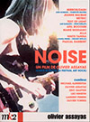
|
- Door
- film 2005
- running time: 18 minutes
- O’Rourke has written,
“In 2003 I discovered a box of tapes I had thought I had
erased, and had long forgot about. The tapes were all from between
1986–1991... The box also contained what would become...
the music for the films Door and Not Yet.”
- reportedly the film is based on feedback and
and images of an opening door
- screened at the No Fun festival in New
York in May 2005 (but not included on the DVD later released
from the festival)
- included on Noise DVD (MK2 Music) 2006,
documenting the Carte Blanche Au Festival Art Rock;
see http://rock.discogs.com/release/770570
for details on the DVD;
I’m guessing the film is included as a bonus track
but is not actually considered part of the festival
documentary
directed by Olivier Assayas
|
|
|
- Not Yet
- film 2003
- running time: 18 minutes
- from the Rotterdam Film Festival program:
“Not Yet, by Jim O’Rourke, is the only finished
and screened film by this musician so far. He uses a scene from
[Brian DePalma’s Blow Out].
The camera
revolves around a sound technician who enters his studio and
discovers that all his magnetic tapes have been erased. The physical
effect of this disorienting scene is enhanced by double printing
and an eerie, floating soundtrack.” (The sound technician
is played by John Travolta.)
- from Sonic Youth’s spring 2004 newsletter:
“On April 23rd the Whitney will show Jim’s film Not
Yet with live music” (at the Whitney Biennial)
- O’Rourke has written,
“In 2003 I discovered a box of tapes I had thought I had
erased, and had long forgot about. The tapes were all from between
1986–1991... The box also contained what would become...
the music for the films Door and Not Yet.”
|
|
|
other credits
|
|
|
Notes: Film music composed and/or performed by O’Rourke
is listed in the discography section rather than here.
|
|
|
- Toshio Matsumoto
- Funeral Parade of Roses
- DVD 2006
- O’Rourke supplied an essay for the booklet of the DVD reissue of this 1969 film
|
|
|
|
|
|
|
|
|
- Sam Jones
- I Am Trying To Break Your Heart
- 2DVD 2003
- film 2002
- O’Rourke appears briefly in the film but does not speak;
however he is heard in some of the outtakes included on the DVD set
|
|
|
|
|
|
|
- Despite the Water Supply
- 7″ (Touch) 2008
- from Touch’s “Touch Sevens” series of 7″s
- recorded at Steamroom Tokyo in May 2008
|
|
|
- 6 Oscillators 87/Guitar 88
- LP (No Fun) 2006
- from No Fun’s “Rotten” LP series
- limited edition of 500 copies
- recorded in 1987–1988; one side is oscillators, the other tabletop guitar
|
|
|
- The New Blockaders/Thurston Moore/Jim O’Rourke
- The Voloptulist
- CD (Hospital) 2006
- LP (Ecstatic Peace) 2007
- the first of two tracks is a Blockaders/Moore collaboration;
the other track, “840 Seconds Over”, is a Blockaders/O’Rourke collab with guest Chris Corsano on drums
- CD is limited edition of 1000
- LP is limited edition of 500, with different artwork
|
|
|
- Mizu No Nai Umi
- CD (Headz) 2005
- unreleased recording from 1990, plus a live version from 2003 (with Tim Barnes on crotales and Karen Waltuch on viola)
- title translates roughly as “Sea Without Water”
|
|
|
- “Oscillators and Guitars”
- on split LP w/ Thomas Ankersmit
- LP (Tochnit Aleph) 2005
- recorded in 1992
- limited edition of 750 copies
|
|
|
- Old News Vol. 4
- CD-R (no label) 2005
- sold on tour in Japan in fall 2005
- hopefully this is the right translation for the Japanese title
- according to a listener, the first of the two tracks on this
disc is “the orchestral part of the last track on the first
Fenno’berg album”
- (I have no information on any Vol. 3)
|
|
|
- “Some Kind Of”
- on From the Earth to the Spheres Vol. 4 split LP w/ My Cat Is An Alien
- LP (Opax) 2005
- O’Rourke’s side is a solo tabletop guitar track
recorded in 1988
- LP is limited edition of 100 copies
- advance promotional CD-R copies exist but were never offered for sale
- unlike other volumes in the series, this will not be reissued
on CD by Cargo UK
|
|
|
|
|
|
- Love Liza
- film 2002
- the film includes music from several of O’Rourke’s
albums
- soundtrack not available separately
|
|
|
- He Who Laughs
- LP (Neon Gallery) 2002
- one-sided LP on clear vinyl
- limited edition of 500 copies
- music made for Herbert Brenon’s silent film of the same title
|
|
|
- Old News Vol. 2
- CD-R (no label) 2002
- solo electronics
- limited edition of about 30 copies
- sold on Mirror’s tour of Japan in late 2002
|
|
|
- Old News
- CD-R (no label) 2002
- solo electronics
- limited edition of about 40 copies, each with a unique cover
- sold on Diskaholics Anonymous Trio tour of Japan in early 2002
|
|
|
- I’m Happy and I’m Singing and a 1, 2, 3, 4
- CD (Mego) 2001
- LP (Mego) 2002
- CD (P-Vine) 2002
- the Japanese version on P-Vine includes a bonus track
called “Let’s Take It From the Top”
|
![[cover]](thumbs/thumb-insignificance.jpg)
|
- Insignificance
- CD/LP (Drag City) 2001
- (lyrics)
- “Get a Room” included on
comp CD included with December 2001 issue of Uncut [an English magazine])
- “Therefore I Am” issued as a one song promotional CD
by Domino
- “All Downhill From Here”, “Therefore I Am”,
and “Get a Room” included on promotional Le Mellieur du rock Underground Americain comp CD (Domino) 2001
- “All Downhill From Here” included on Both Sides Now: The Spirit of Americana comp 2CD (Gravity) 2002
(at least, I assume it is the album version)
- “Therefore I Am” included on Radio Cookie Scene comp CD included with September 2001 issue of Cookie Scene (a Japanese magazine)
(at least, I assume it is the album version)
|
|
|
|
|
|
- Halfway to a Threeway
- EP/CD-EP (Drag City) 1999
- CD-EP (P-Vine) 1999
- (lyrics)
- the Japanese version on P-Vine does not include any extra tracks, as has sometimes been erroneously reported
|
![[cover]](thumbs/thumb-eureka.jpg)
|
- Eureka
- CD/LP (Drag City) 1999
- CD (P-Vine) 1999
- (lyrics)
- Japanese version on P-Vine includes a bonus
guitar instrumental track, “Little Island Walking”
- “Ghost Ship In A Storm” included
on Worlds of Possibility comp 2CD (Domino) 2003
- “Ghost Ship In A Storm” included
on Another Country comp CD/2LP (Agenda) 2003
- “Eureka” included in film
Eureka directed by
Shinji Aoyama (2000)
- “Through the Night Softly” included on promotional disc Rough Cuts: Music for Films comp CD (Rough Trade) 2000
- a remix of “Ghost Ship in a Storm” appears on a Zero 7 CD; see “Etc.” section for details
- “Through the Night Softly” included
on Domino: On The Wire comp CD (Domino) 1999 (included with November 1999 issue of The Wire)
- “Ghost Ship In A Storm” included on Might Club comp
CD (NME) 1999 (included with 12/99 issue of NME)
- “Women of the World” (shortened version) included
on ON:1 15 Top Tracks For The 21st Century comp CD (NME) 1999
(included with an issue of NME)
- “Women of the World” included on
Unconditionally Guaranteed Vol. 3 comp
CD (Uncut) 1999 (included with April 1999 issue of Uncut [an English magazine])
- “Something Big” used in advertisement for British Gas
|
|
|
- Please Note Our Failure
- 10″ (Some) 1998
|
|
|
|
|
|
|
|
|
|
|
|
|
|
|
|
|
|
|
|
|
- “Muni”/“Michel Piccoli”
- 7″ (Table of the Elements) 1993
- on Guitar Series Vol. I comp CD (Table of the Elements) 2003?
- the 7″ is on white vinyl; I don’t know the edition size
- according to someone who auctioned a copy of the CD reissue on eBay, “less than 100 copies” of the CD were made as promotional items and were not for sale
|
|
|
- Remove the Need
- CD (Extreme) 1993
- CD (P-Vine) 1999
- an excerpt was included on the Extreme Music 1993 promo sampler cassette
|
|
|
- Scend
- CD (Divided) 1992
- LP (Three Poplars) 2003
- LP reissue is a revised version, in a limited edition
of 1000 copies on clear vinyl
|
|
|
|
|
|
- Tamper
- CD (Extreme) 1991
- CD (P-Vine) 1999
- excerpted without authorization on the RRR Taste Test Cassette Vol. 7 comp cassette (RRRecords) 1992
- some pieces were altered somewhat by O’Rourke for the 1999 reissue
|
|
|
- The Ground Below Above Our Heads
- LP (Entenpfuhl) 1991
- with Dave Cerra (French horn)
- limited edition of 500 copies
|
|
|
|
|
|
- It Takes Time to Do Nothing
- cassette (audiofile Tapes) 1990
- solo prepared guitar (plus some Ensoniq Mirage)
|
|
|
- Remove the Need
- cassette (Complacency) 1989
- solo prepared guitar
- contains completely different material than the recording issued under the same name in 1993
|
|
|
|
|
|
|
|
|
|
- “Viva Forever”
- on Guilt by Association comp
- CD (Engine Room) 2007
- O’Rourke covers the Spice Girls on a compilation of
“today’s most exciting Indie talent re-interpreting
their favorite guilty pleasure pop songs”
- details at http://www.engineroomrecordings.com/gba/
|
|
|
- “Out with the Old”
- on Avanto 2006 comp
- CD (Avanto) 2006
- O’Rourke’s contribution is a previously unreleased
a 26 minute piece commissioned by the festival; the original sound material
is from 1990 but underwent transformation in 1991, 1994, and 2006
|
|
|
|
|
|
- “Naoru”
- on Not Alone comp
- 5CD (Jnana) 2006
- benefit compilation with proceeds to benefit Médecins Sans Frontières (Doctors Without Borders)
- this track was previously released as track 5 of Old News (volume 1)
|
|
|
- “Kaminari One”
- on I Love Guitar Wolf Very Much comp
- CD (Ki/oon) 2005
- CD (Narnack) 2005
|
|
|
- “Corona”
- from The Wild Blue Yonder
- film 2005
- the rest of the music in the movie is by other people
- this was recorded at the Grizzly Man sessions, but is not the same as a similarly-titled track on that disc
|
|
|
|
|
|
- (5 loop grooves)
- on Yokomono comp
- 12″ (Staalplaat) 2004
- eleven artists, including O’Rourke, contributed five loop grooves each
|
|
|
- “Call Up On Your Sisters”
- on All Tomorrow’s Parties 3.0 comp
- 2CD/2LP (ATP) 2003
|
|
|
- Jim O’Rourke & Glenn Kotche
- “Pictures of Adolf Again”
- MP3 (Protest) 2003
- cover version of a Bill Fay song, released online
|
|
|
- (untitled)
- on Het Apollohuis 1980-1997: An Anthology of New
Music Concerts comp
- 2CD (Het Apollohuis) 2003
- recorded May 3, 1993
|
|
|
|
|
|
- “[?]”
- on Showa Residence Akaban (the Red Disc) comp
- CD (Substance) 2002
|
|
|
- “When I First Saw Phauss...”
- on KREV X comp
- 2CD (Ash) 2002
- credited to “James O’Rourke”
|
|
|
- Jim O’Rourke featuring Original Love
- “Dakishimetai”
- on Happy End Parade comp
- 2CD (Speedstar) 2002
- tribute compilation to the Japanese band Happy End; more information is here, but it’s in Japanese
- a short text by Jim about Happy End, I think from the CD booklet, is at http://www.jvcmusic.co.jp/speedstar/hattori/comment/jim.html
- I’m told the song title roughly translates as “I want to hold you”
|
![[cover]](thumbs/thumb-or2.jpg)
|
- “Like Urine Loves Cold Slate”
- on Or Some Computer Music: Issue 2 comp
- CD (Or) 2001
- art on back cover by O’Rourke
|
|
|
- “May ’00, 2000”
- on BitStreams comp
- CD (Whitney Museum of American Art) 2001
- comp is subtitled “Sound works from the exhibition at the Whitney Museum of American Art, March 22–June 10, 2001”
|
|
|
- “Venus In Furs”
- on Rabid Chords 002: VU Tribute comp
- 2CD (Victor Japan) 2000
- cover version of a song by the Velvet Underground
- with Tim Barnes, Glenn Kotche, and Julie Pomerleau
- O’Rourke contributed a paragraph for the CD booklet
|
![[cover]](thumbs/thumb-elysianfields.jpg)
|
- “Exhol”
- on The Elysian Fields Soundtrack/Bande son Elysian Fields comp
- CD (Purple Music/Centre Pompidou) 2000
- CD came with art catalog from an exhibit at the Centre Pompidou in Paris
|
![[cover]](thumbs/thumb-chi2018.gif)
|
- “Never Again”
- on Chicago 2018—It’s Gonna Change comp
- 2CD (Clearspot) 2000
|
|
|
- “Thanks But No Thanks”
- on Drive From 2000 comp
- CD (Wax/Tokuma) 1999
- cover version of a song by Sparks
|
|
|
- “Norton Recovery”
- radio broadcast 1998
- broadcast on the Kunstradio program on Austrian national radio; available via RealAudio (and also orderable on cassette) at http://kunstradio.at/1998B/1_10_98.html
|
|
|
- “Fall Breaks and Back to Winter (Spring Breaks and Back to Winter)”
- on Smiling Pets comp
- CD (Sony Japan) 1998
- with Edith Frost (vocals)
|
|
|
- “Divided”
- on Modulation & Transformation 3 comp
- 3LP/2CD (Mille Plateaux) 1998
|
|
|
- (untitled single loop groove)
- on RRR-500 comp
- LP (RRRecords) 1998
- O’Rourke is credited as “F4E JO” (For 4 Ears Jim O’Rourke); presumably the groove is excerpted from one of O’Rourke’s recordings for For 4 Ears
|
|
|
- “There As”
- on Scatter comp
- CD (Ash) 1997
|
|
|
|
|
|
- “Antithese”
- on Musique Action 2 comp
- CD (Vand’Oeuvre) 1996
|
|
|
- “Sinking Lights in Lambeth”
- on Statics comp
- CD (CCI) 1995
|
|
|
|
|
|
- “Tacere Fas”
- on Unentitled comp
- CD (These) 1995
|
|
|
- (untitled track)
- on 28 (Nickel) comp
- 7″ (Table of the Elements) 1995
- limited edition of 250 (all of which say “record number one in an edition of 250”)
- music on one side only; credits etched on flip side
- produced by O’Rourke
- insert by O’Rourke
- other tracks are by Tony Conrad, Richard Youngs, Faust, and Keith Rowe
|
|
|
- “Purge”
- on The Arbitrary Nature of Meaning comp
- CD (Isomorphic) 1995
|
|
|
- “Flat Without a Back”
- on Ambient 4: Isolationism comp
- 2CD (Virgin) 1994
|
|
|
- (untitled single loop groove)
- on RRR-100 comp
- 7″ (RRRecords) 1994
|
|
|
- “Sheep in Wolf’s Clothing”
- on Poetic Silhouettes comp
- CD (AMF) 1993
|
|
|
- “Far Along a Vacant Sea”
- on X-X Section comp
- CD (Extreme) 1993
|
|
|
|
|
|
- “Eveh”
- on Chicago Loops comp
- CD (Sup Up) 1991
|
|
|
- “Ring Unite Failure”
- on Assemblage 1990 comp
- cassette (Realization) 1990
|
|
|
- “Unruhig”
- on Patience is a Virtue comp
- cassette (Sound of Pig) 1990?
|
|
|
- “Fey”
- on split cassette with David Prescott
- cassette (Generations Unlimited) 1988?
|
|
|
|
|
|
|
|
|
- Original Silence
- The Second Original Silence
- CD (Smalltown Supersound) 2008
- with Thurston Moore, Terrie Ex, Mats Gustafsson, Paal Nilssen-Love, and Massimo Pupillo
|
|
|
- Original Silence
- The First Original Silence
- CD (Smalltown Supersound) 2007
- with Thurston Moore, Terrie Ex, Mats Gustafsson, Paal Nilssen-Love, and Massimo Pupillo
|
|
|
- Merzbow/Carlos Giffoni/Jim O’Rourke
- Electric Dress
- CD (No Fun) 2007
- recorded live in Tokyo in 2006;
O’Rourke on synth and microphone;
Masami Akita (Merzbow) performs on all analog equipment, no laptop
- edited and mastered by O’Rourke
|
|
|
- Osorezan
- Mimidokodesuka
- CD (Polystar Jazz Library) 2006
- Osorezan is the trio of O’Rourke, Darin Gray, and Chris Corsano
|
|
|
- Jim O’Rourke & Akira Sakata
- Explosion
- CD (Polystar Jazz Library) 2006
- with Darin Gray, Chris Corsano, Manabu Sakata
|
|
|
- Carlos Giffoni/Jim O’Rourke
- Synth Destruction #2
- CD-R (No Fun) 2006
- limited edition of 50 numbered copies
- sold at Giffoni’s live dates in Japan in September 2006
(some of which are with O’Rourke); some copies were also available
by mail order
|
|
|
- Thurston Moore/Lee Ranaldo/Steve Shelley/Jim O’Rourke
- Melbourne Direct
- 2LP (Saucerlike) 2006
- recorded direct to disc at Corduroy Records in Melbourne, Australia
- limited edition of 800 copies
|
|
|
- Jim O’Rourke & Akira Sakata
- Oyobare/Tetrodotoxin
- CD (Polystar Jazz Library) 2005
- with Darin Gray, Chris Corsano, Manabu Sakata, Masaki Yoshimi
- recorded live at the Pit Inn in Tokyo, April 2005
|
|
|
- White Out
- China Is Near
- CD (ATP) 2005
- White Out is Lin Culbertson and Tom Surgal, joined on this disc by guests O’Rourke and William Winant
|
|
|
- North Six
- 3″ CD (Antopic) 2004
- with Carlos Giffoni and Lee Ranaldo
|
|
|
|
|
|
- The Lightbox Orchestra
- First Contact!
- CD (Locust) 2002
- O’Rourke plays on one of the four tracks, recorded in February 1998
|
|
|
- Alpha Lemur Echo Two
- CD (Mycophile) 2001
- with (on most of CD) Michael Prime and Eddie Prévost
- with (one one track, recorded 1991) Michael Prime, Adam Bohman, and Andy Hammond
- limited edition of 1000
|
|
|
- Brett Larner
- Itadakimasu: Improvised Duets 1994-2000
- CD (Spool) 2001
- O’Rourke plays hurdy-gurdy on one track (recorded by Dan Burke in 1996)
|
|
|
- White Out
- Drunken Little Mass
- CD (Ecstatic Peace) 2000
- White Out is Lin Culbertson and Tom Surgal; O’Rourke guests on guitar and Powerbook
|
|
|
|
|
|
- Tribute to Masayuki Takayanagi
- CD (Grob Musik) 2000
- three tracks are by the trio of Weasel “Necrodevourer” Walter, Jim “Lycanthrovampyr” O’Rourke, and Fred “Sado-Immolator” Lonberg-Holm; the other two tracks are Walter solo
|
|
|
- “Rockon”
- on Kim’s Bedroom CD (Purple) 2000
- with Ikue Mori; came with the publication “Purple”
|
![[cover]](thumbs/thumb-no99.jpg)
|
- “[?]”
- on No. 99 5CD (Entartete Kunst) 2000
- with Jason Bellchamber
- O’Rourke also contributed a short text in the booklet included with the set
- recorded live at the No Music Festival in 1999
- limited edition of 500 copies
- album details at http://www.ek-records.com/nomusic99.htm
|
|
|
- In Bern
- CD (Hat Hut) 1999
- with Loren Mazzacane Connors
|
|
|
- Myopic Bookstore Improvised Music Workshop Volume One
- CD (BOXmedia) 1999
- O’Rourke on one track only, in trio with Kevin Drumm and Michael Colligan
|
|
|
- Werner Dafeldecker/Christof Kurzmann/Christian Fennesz
- CD (Charhizma) 1999
- O’Rourke appears one only one on the five tracks, playing computer (Powerbook). The other guests are Martin Siewert on one track and Kevin Drumm on three tracks.
|
|
|
- Fred Lonberg-Holm
- Site-Specific
- CD (Explain) 1999
- O’Rourke plays guitar on one track
|
|
|
- The Improvisation Meeting in Chicago
- CD (LFQR) 1999
- O’Rourke on three tracks only, playing acoustic guitar only; with (in varying combinations) Taku Sugimoto, Masahiko Okura, Kevin Drumm, Steve Butters, Josh Abrams, Michael Colligan, Brent Gutzeit, Fred Lonberg-Holm
|
|
|
- Fear No Fall
- CD (Lowlands) 1998
- with Toshinori Kondo, DJ Low, Zeena Parkins, David Shea, Dirk Wachtelaer; O’Rourke plays guitar, synthesizer and harmonica
|
|
|
- “There’s Hell in Bern”
- on Meme CD (Meme) 1998
- with Loren Mazzacane Connors
|
|
|
|
|
|
- Rafael Toral
- Chasing Sonic Booms
- CD (Ecstatic Peace) 1998
- O’Rourke plays accordion on one track and piano and other instruments on another
|
|
|
- Clouds
- CD (Victo) 1998
- with Lee Ranaldo, Gianni Gebbia, William Hooker
|
|
|
- “ ”
- on The Basement Recordings: Live at Cicero’s comp
- CD (On the Clock) 1997
- with Darin Gray, Kevin Drumm
|
|
|
|
![[cover]](thumbs/thumb-dutchharbor.jpg)
|
- Dutch Harbor: Where the Sea Breaks Its Back
- film 1997
- videocassette (Atavistic) 1997
- soundtrack CD/LP (Atavistic) 1997
- one track solo; one track duet with Will Oldham (a song, not improv); plays on four other tracks as member of improvising group “The Boxhead Ensemble” with Ken Vandermark, David Grubbs, etc.
|
![[cover]](thumbs/thumb-slowmo.gif)
|
|
|
|
|
|
|
|
![[cover]](thumbs/thumb-acoustics.jpg)
|
|
|
|
- Third Straight Day Made Public
- CD (Complacency) 1994
- with Eddie Prévost
|
|
|
|
|
|
|
|
|
- “Music Through Channels”
- on No Smoking, Littering, or Radio Playing comp
- CD (WNUR/Cargo) 1993
- with Henry Kaiser
|
|
|
- Tomorrow Knows Where You Live
- CD (Victo) 1992
- with Henry Kaiser
|
|
|
- “Monster Investigator Juspion”
- on Passed Normal Vol. 5 comp
- CD (Fot) 1992
- with Henry Kaiser
|
|
|
- “[?]”
- on World Music Series Vols. 19-20 comp
- cassette (Upsetco) 1991?
- with Eugene Chadbourne
|
|
|
- Neuro Eco Media
- cassette (Nux Organization) 1990
- with K.K. Null
|
|
|
|
|
|
|
The members of this trio are O’Rourke, Kim Gordon, and Alan
Licht.
|
|
|
|
|
|
- “Male-In-Communication”
- on Fields and Streams comp
- 2CD (Kill Rock Stars) 2002
|
|
|
The members of this trio are O’Rourke, Jeff Tweedy, and Glenn
Kotche.
|
|
|
|
|
|
|
|
|
O’Rourke became an official member of Sonic Youth in 2001; on
a few recordings prior to Murray Street, he was a guest. The
other members of the group are Kim Gordon, Thurston Moore, Lee
Ranaldo, and Steve Shelley. He left the group in late 2005.
|
| Links: For more detailed
discographical information on Sonic Youth (both with and without
O’Rourke) than I provide here, see Saucer-Like’s
discography site.
See also the official Sonic Youth
site — it includes lots of materials featuring
O’Rourke including streaming video of the band.
|
|
|
- Destroyed Room: B-Sides and Rarities
- CD (Geffen) 2006
- O’Rourke on only some tracks
|
|
|
- Sonic Youth with Tim Barnes
- Koncertas Stan Brakhage Prisiminimui
- CD (SYR) 2005
- recorded live at Anthology Film Archives on April 12, 2003
|
|
|
- Corporate Ghost—The Videos: 1990–2002
- DVD (Geffen) 2004
|
![[cover]](thumbs/thumb-sonicnurse.jpg)
|
|
|
|
- “Mariah Carey and the Arthur Doyle Hand Cream”
- on Buddy Series Vol #1 (split with Erase Errata)
- 7″ (Narnack) 2003
- limited edition of 1500 copies
|
|
|
- “Loop Cat”
- on You Can Never Go Fast Enough comp
- CD/2LP (Plain) 2003
- I’m assuming Jim plays on this
|
|
|
- Sonic Youth + I.C.P. + The Ex
- In the Fishtank
- CD-EP/EP (Konkurrent) 2002
- collectively improvised; Sonic Youth members on this disc do not include Kim Gordon, but do include guest William Winant; I.C.P. are represented by Ab Baars, Han Bennink, and Wolter Wierbos; The Ex are represented by Luc Ex and Terrie Ex
- “III” included on Wire Tapper comp CD included with November 2002 issue of The Wire
|
![[cover]](thumbs/thumb-demonlover.jpg)
|
- Demonlover
- film 2002
- CD (Labels/Virgin France) 2002
- 8 of 12 tracks on the CD are by Sonic Youth including O’Rourke
- some more music from the film is on the Kali Yug Express EP
|
|
|
- Kali Yug Express
- 10″ EP (Geffen) 2002
- limited edition of 500 copies on blue vinyl
- included with some French copies of Murray Street
- the piece on side 1 is from Things Behind the Sun;
the pieces on side 2 are from Demonlover (but are not on that
soundtrack CD)
- the material on this EP was also available as MP3
downloads to owners of the Murray Street CD, but the URL
no longer works
|
|
|
|
|
|
- Brigitte Fontaine
- Kekeland
- CD/10″ (Virgin France) 2001
- O’Rourke plays piano on “Demie clocharde&rdquo and also mixed that
track and the title track
|
|
|
- Things Behind the Sun
- film 2001
- soundtrack not available separately (except for some material on the Kali Yug Express EP)
|
|
|
- Lightnin’
- 7″ (Olof Bright) 2000
- included in The Black Box boxset; see
entry for jim:computer:hotel for more details
- recorded live in Norway in June 2000
|
|
|
- Without Kim
- CD (Olof Bright) 2000
- included in The Black Box boxset; see entry for jim:computer:hotel for more details
- O’Rourke mixed this, but does not perform; Kim Gordon is absent and Mats Gustafsson guests
|
|
|
- NYC Ghosts and Flowers
- CD/LP/CS (Geffen) 2000
- O’Rourke plays bass on several tracks and vibes on one (no Powerbook as reported elsewhere), also produces, and co-recorded/mixed it
|
|
|
- Goodbye 20th Century
- 2CD/2LP (SYR) 1999
- Sonic Youth perform pieces by Cage, Cardew, Maciunas, Tenney, Oliveros, Wolff, et al; O’Rourke and others guest
|
|
|
- Sonic Youth/Jim O’Rourke
- Invito Al Cielo
- CD/EP (SYR) 1998
|
|
|
The members of this trio are O’Rourke, Thurston Moore, and Mats
Gustafsson.
|
|
|
- Live in Japan, Vol. 1
- CD/LP (Load) 2006
- recorded 2002
|
|
|
|
|
|
- “Yellow Label Silence”/“Come Back Archimedes Badkar, All is Forgiven”
- 12″ (no label) 2002
- limited edition of 300: 100 with cover art
by Moore, 100 with cover art by Gustafsson, and 100 with
cover art by O’Rourke (O’Rourke’s, at
least, are all
different); about 60 of O’Rourke’s copies
were lost in transit and may or may not be in circulation
- the cover image shown is (according to Printed
Matter, Inc.’s website) a painting by Kim Gordon, so the
cover art attribution information above may not be correct
(perhaps Moore and Gordon both did some of that 100)
- A-side is a different mix of the track from
the CD on Crazy Wisdom; B-side is what O’Rourke describes as
“a huge collage of the whole recording session”
|
|
|
- “Totally Gump (Gump Completist) — Alternative Mix By Jim”
- on Look at the Music comp
- CD (Olof Bright) 2002
- this is a remix of a track from the CD on Crazy Wisdom
- this was one of two CD’s issued to accompany the catalog for the Look at the Music/SeeSound festival coproduced by Neon Gallery
|
|
|
- Diskaholics Anonymous Trio
- CD (Crazy Wisdom) 2001
|
|
|
The members of this trio are O’Rourke, Peter Rehberg (aka Pita), and
Christian Fennesz (aka Fennesz). (Initially, they were known as
Horst und Snail mit Markus.)
|
|
|
- The Return of Fenn O’Berg
- CD/LP (Mego) 2002
- CD (P-Vine) 2002
- the Japanese release on P-Vine contains one extra track
|
|
|
- The Magic Sound of Fenn O’Berg
- CD (Mego) 1999
- “Gürtel Zwei” included on Wire Tapper 5 comp CD (The Wire) 2000 (included with issue #193 of The Wire)
|
|
|
- “(5.6m of) Fennoberg”
- on Sonar 99 comp
- 4CD (So Dens) 1999
|
|
|
The main members of Mirror are Andrew Chalk and Christoph Heemann,
but O’Rourke has been a frequent guest member.
|
|
|
- Mirror
- Still Valley
- LP (Die Stadt) 2004
- CD (Die Stadt) 2005
- LP is limited edition of 500 copies, of which 200 are on clear vinyl and include a signed insert
(or maybe it’s 520/220; sources differ)
- CD is limited edition of 1000 copies
- CD includes one extra track
|
|
|
- Mirror
- Figures in a Landscape
- 2LP (Three Poplars) 2004
- limited edition of 300 copies, each with unique artwork
- reissue of the In to the Wood and Live in Bern CD-R’s
|
|
|
- Mirror
- A Pilgrim’s Solace
- CD-R (Three Poplars) 2003
- limited edition of 150 copies, signed and numbered
|
|
|
- Mirror
- Live in Bern
- CD-R (Three Poplars) 2003
- limited edition of 149 copies, numbered (49 of them also signed)
- later reissued on the Figures in a Landscape 2LP (cf.)
|
|
|
- Mirror
- In to the Wood
- CD-R (Three Poplars) 2003
- limited edition of 200 copies, each with unique artwork
- later reissued on the Figures in a Landscape 2LP (cf.)
|
|
|
- Mirror
- Die Spiegelmanufaktur
- LP (Die Stadt) 2002
- CD (Die Stadt) 2003
- picture disc; limited edition of 500 copies
- CD reissue is a limited edition of 1000 copies
and includes an 18-minute bonus track
|
|
|
Gastr del Sol consisted of David Grubbs and a rotating cast of
collaborators, usually including O’Rourke until July 1997 when
he left the group.
|
|
|
Links:
There is a new Gastr del Sol
site at http://www.bitmine.net/~gnat/gastr.html.
A live review of Gastr del Sol (and Tony Conrad) in 1996
is here.
|
![[cover]](thumbs/thumb-camoufleur.jpg)
|
- Camoufleur
- CD/LP (Drag City) 1998
- CD (Blues Interactions) 1998
- “The Seasons Reverse” included on Unconditionally Guaranteed comp CD (Uncut) 1999
- “Bauchredner” included on Musique facile pour gens difficiles comp CD (Virgin France) 1998
- “The Seasons Reverse” included on Un Hiver 98 comp CD 1998 (included with French zine Les Inrockuptibles)
|
|
|
- “Black Horse”
- “Ursus Arctos Wonderfilis”
- on 7UP Listen Up! comp
- CD (Track Marketing) 1997
- This was a prerecorded radio program, hosted by Janeane Garofalo and distributed to college radio stations only. Also included is interview material with the band.
|
|
|
- “Dead Cats in a Fog Horn”
- on Nova Feedback comp
- CD (God Mountain) 1996
|
|
|
- “The Bells of St. Mary”
- on The Christmas Album comp
- CD (Sony Japan) 1996
|
|
|
- Upgrade & Afterlife
- CD/2LP (Drag City) 1996
- two excerpts from “Our Exquisite Replica of ‘Eternity’” used in The Book of Life film (1998) by Hal Hartley (but not included on soundtrack album)
|
|
|
- “The Japanese Room at La Pagode”
- on split 7″ with Tony Conrad
- 7″ (Table of the Elements) 1995
- the first 500 copies include a bonus 7″ by Tony Conrad called “Ten Years Alive on the Infinite Plain”, on which O’Rourke plays
|
|
|
- “Quietly Approaching”
- on Red Hot and Bothered comp
- CD (Red Hot/Kinetic/Reprise) 1995
|
|
|
|
|
|
|
|
|
- Mirror Repair
- EP/CD-EP (Drag City) 1994
- “Eight Corners” included on This Means War comp CD (Toy’s Factory) 1996
|
|
|
- Crookt, Crackt, or Fly
- CD/LP (Drag City) 1994
|
|
|
- 20 Songs Less
- 7″ (TeenBeat) 1993
- 7″ (Minority) 2007
- side 2 only was included on Wakefield Vol. 3: Superstars on Forty-Five comp CD (TeenBeat) 1995; the use was unauthorized
- the 2007 reissue is on clear vinyl
|
|
|
Notes: O’Rourke does not appear on Gastr del Sol’s first
release, The Serpentine Similar CD/LP (TeenBeat) 1993, reissued
in 1997 on Dexter’s Cigar. Volume 1 of Wakefield
includes “Eye Street” from The Serpentine Similar. The
four Wakefield volumes were available as a limited
edition boxed set. The Food and Drink Synthesizer 7″
cited in some discographies does not exist (it was a working name for
what eventually became 20 Songs Less).
|
|
|
Brise Glace consisted of O’Rourke, Thymme Jones, Darin Gray, and Dylan
Posa. Kevin Drumm replaced Posa briefly but that lineup did not
record. The group is now defunct.
|
|
|
Links:
Skin Graft has a Brise Glace page.
You may want to read KZSU’s
review of the album. Vital
#38 also contains a review.
|
|
|
- “Likeness”
- on Camp Skin Graft comp
- CD (Skin Graft) 1997
- on this release, Brise Glace consisted of “Jim O’Rourke: razor blade, Darin Gray: electric bass”
|
| 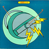
|
- “Angus Dei aus Licht”
- on Sides 1-4 comp
- 2x7″ (Skin Graft) 1996
- on this release, Brise Glace consisted of “Jim O’Rourke and razorblade”
|
|
|
- When In Vanitas...
- CD/LP (Skin Graft) 1994
- with guests (on one track) Gene Coleman, David Grubbs, Christoph Heemann, Henry Kaiser, Carolyn Faber
- “Neither Yield Nor Reap” included on Monsters, Robots and Bug Men comp 2CD (Virgin) 1996
|
|
|
- “In Sisters All And Felony”/“Angels on Installment Plan”
- 7″ (Skin Graft) 1994
|
|
|
Yona-Kit consisted of Brise Glace, minus Dylan Posa, plus K.K. Null.
|
|
|
- Yona-Kit
- CD/LP (Skin Graft) 1995
- “Skeleton King” included on Camp Skin Graft comp CD (Skin Graft) 1997
- “Dancing Sumo Wrestlers” included on Monsters, Robots and Bug Men comp 2CD (Virgin) 1996
|
|
|
Organum consists of David Jackman and a rotating cast of
collaborators.
|
|
|
Links: Here is an Organum web page.
|
|
|
- Vacant Lights/Rara Avis
- 2CD (Die Stadt) 2004
- the Rara Avis disc includes “Iuel”/“Wolf” and “Obon” (see below) as well as a previously unissued track called “Rara Avis” which is a 2003 re-work by David Jackman of a 1991 mix by O’Rourke of a 1990 performance by Jackman, O’Rourke, Dinah Jane Rowe, and Eddie Prévost
- limited edition of 600 copies
|
|
|
|
|
|
|
|
|
|
|
|
|
|
|
Notes: The Delta CD cited in some discographies
does not exist.
|
|
|
The mid-90’s incarnation of the Red Krayola was somewhat fluid but
usually included Mayo Thompson, David Grubbs, Tom Watson, John
McEntire or George Hurley, Albert Oehlen, and O’Rourke.
|
|
|
Links: There is a Red Crayola discography online here.
|
|
|
- Sighs Trapped by Liars
- CD (Drag City) 2007
- O’Rourke plays various instruments, also mixed it
|
|
|
- Singles
- CD (Drag City) 2004
- O’Rourke appears on only two tracks,
previously issued as the “Chemistry”/“Farewell to Arms”
7″
|
|
|
- Japan in Paris in LA
- 16mm film (Kyodai Productions) 1997
- soundtrack CD (Drag City) 2004
- the film is available through Electronic Arts Intermix (http://www.eai.org/)
- on the soundtrack, the credited composers for one track (“The Surrealist Dream No. 2”) are O’Rourke and Tom Watson
|
|
|
|
|
|
- “Chemistry”/“Farewell to Arms”
- 7″ (Drag City) 1995
|
|
|
|
|
|
|
|
|
Notes: O’Rourke does not appear on the “14/Stink Program” 7″
(Drag City) 1994 or on
“Columbia” from the Hey Drag City comp CD/2LP (Drag City) 1994.
|
|
|
Indicate consisted of O’Rourke and Robert Hampson (of Main).
|
|
|
|
|
|
Mimir is a collaborative project of Edward Ka-Spel and Phil Knight
(aka Silverman) of Legendary
Pink Dots, Christoph Heemann and Andreas Martin of HNAS, and O’Rourke.
|
|
|
- 7″ (Brainwashed) 2005
- clear vinyl
- first 50 copies include bonus DVD-R
|
|
|
- Mimir
- LP (Streamline) 1999
- limited edition of 950 on green vinyl
|
|
|
- Mimyriad
- CD (Streamline) 1994
- LP (Streamline) 1999
- the album was remixed/re-edited for the 1999 vinyl reissue
- the reissue is a limited edition of 550 copies
|
|
|
Notes: O’Rourke does not appear on Mimir’s debut,
Mimir CD/2LP (Flabbergast) 1990, or Mimir’s track on the
Kollabaris comp CD-R (Terminal Kaleidoscope)
2001.
|
|
|
Illusion of Safety consists of Dan Burke and a rotating cast of
collaborators. O’Rourke was involved between 1988 and 1993.
|
|
|
Links: Here is the official
Illusion of Safety web site.
|
|
|
- Water Seeks Its Own Level
- CD (Silent) 1994
- used as sample source only
|
|
|
- Distraction
- CD (Odd Size) 1994
- O’Rourke provides rhythm programming and guitar on “Helen Your Brain, Forever since about Breakfast”
- also used as sample source on one other track
|
|
|
- Probe
- CD (Staalplaat) 1993
- Dan Burke has described this CD as a “50/50 collaboration”
between him and O’Rourke
|
|
|
- The False Mirror
- 7″ (a state of flux) 1993
- on one track only
|
|
|
- “Every Tyrant a City”
- on The Great New World In Environment and Acceleration comp
- CD (V2 Organisation) 1992
|
|
|
|
|
|
- Inside Agitator
- CD (Complacency) 1992
|
|
|
|
|
|
- RVE
- cassette (Complacency) 1991
|
|
|
- “Helen Your Brain, Forever since about Breakfast”
- on Chicago Loops comp
- CD (Sub Up) 1991
- plays guitar
|
|
|
- Forced Cohesion
- casssette (Complacency) 1990
|
|
|
- Finite Material Context
- double cassette (Complacency) 1990
|
|
|
- IOS Live/Holeist
- split LP with Holeist
- LP (Complacency) 1989
|
|
|
- Finance And Ideology
- CS (Complacency) 1989
|
|
|
Also sometimes known simply as the Messiahs.
|
|
|
- The Messiahs
- “Houdini”
- on Patience is a Virtue comp
- cassette (Sound of Pig) 1990?
|
|
|
- The Messiahs
- Dead
- cassette (Sound of Pig) 1989?
- personnel on side one (live at the Cubby Bear): Warren Fischer, Jeff Kowalkowski, Tim Mulvenna, Jim O’Rourke, Al Perna, Erin DeWeese; personnel on side two (live on WZRD): Pete Adamczyk, Warren Fischer, Thymme Jones, Jim O’Rourke
|
|
|
|
|
|
- The Elvis Messiahs
- “Hound Dog”
- on His Master’s Voice comp
- cassette (RRRecords) 1988?
|
|
|
- The Elvis Messiahs
- “Metamorphosis of Houdini”
- on Passed Normal 3 comp
- cassette (Fot) 1988
|
|
|
- The Elvis Messiahs
- Freedom of Presence
- cassette ([?]) 1988?
|
|
|
|
|
|
|
|
|
- Miss High Heel
- The Family’s Hot Daughter
- CD (Blossoming Noise) 2008
- recorded in 1995 and 1996; other participants include
Weasel Walter, Jim Magas, Azita Youssefi, Jodie McCann, Nandor Nevai, Chuck Falzone, Bill Pisarri, Tom Smith
- limited edition of 500 copies
|
|
|
|
|
|
- Kahimi Karie
- Nunki
- CD (Victor Japan) 2006
- O’Rourke composed, arranged, played,
produced, and mixed three tracks (the lyrics and singing are by
Karie); he plays guitar and bass on all three tracks and piano on
one
|
|
|
- Jim O’Rourke
- Corona: Tokyo Realization
- CD (Columbia Japan) 2006
- contains two performances of
Toru Takemitsu’s “Corona for pianist(s)” (1962),
played by O’Rourke on piano, harpsichord, and organ
- to be performed, Takemitsu’s score must be
“realized”, either ahead of time or improvisationally;
what O’Rourke plays here
is his own “Tokyo realization” of the piece;
there is also a well known “London version” recorded by Roger Woodward in 1973,
reissued on CD in 2006 by Explore Records
- ordinarily classical releases are credited to
the composer with a secondary credit for the performer,
but Takemitsu’s publishers requested the
album be released under O’Rourke’s name
(however, I have not listed it with O’Rourke’s
true solo releases)
- the disc is listed in some online databases under the working
title Translate Takemitu; the missing S is not an error, but an
alternate, much less commonly used romanization of Takemitsu’s
name, sometimes used by Takemitsu’s publishers
|
|
|
- Beth Orton
- Comfort of Strangers
- CD (Astralwerks) 2006
- O’Rourke plays a variety of instruments and sings backup;
he also produced the album and co-wrote two songs
- there is also a limited edition 2CD version with five extra
songs with which O’Rourke was not involved
|
|
|
- Perfect Partner
- film 2005
- soundtrack LP (Electra) 2005
- music on one side only; etching by Kim Gordon and JD Walsh on flip side
- film is by Kim Gordon, Tony Oursler, and Phil Morrison
- music is by Tim Barnes, Kim Gordon, Ikue Mori, DJ Olive, and O’Rourke
- music mixed by O’Rourke
- the LP is only available as part of a box set also including prints and other items, in a limited edition of 500 copies; see http://www.electra-productions.com/editions.html for more information
|
| 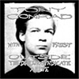
|
- Tony Conrad with Faust
- Outside the Dream Syndicate Alive
- CD (Table of the Elements) 2005
- O’Rourke plays violin
- recorded live in London on February 18, 1995
|
![[cover]](thumbs/thumb-grizzlyman.jpg)
|
- Richard Thompson
- Grizzly Man Soundtrack
- CD (Cooking Vinyl) 2005
- soundtrack to film Grizzly Man
- O’Rourke plays guitar, piano, and accordion, provides some incidental vocals, and co-wrote some pieces, though much is improvised
- the other musicians are Henry Kaiser, Damon Smith, Danielle DeGruttola, and John Hanes
- the DVD of the film includes an hour-long documentary on the making of the soundtrack; O’Rourke is seen and heard speaking a few times, playing instruments, adjusting the preparations of his prepared piano, and clowning around in the “mixing maze”
|
|
|
- Nancy Sinatra
- Nancy Sinatra
- CD (Sanctuary) 2004
- O’Rourke plays bass on two songs
|
|
|
- Mats Gustafsson
- Hidros 3
- CD (Smalltown Supersound) 2004
- O’Rourke is credited with “live mix” and “making it work”
|
|
|
- Male Slut
- “Industrial Noise Blues”
- on Tracks and Fields
- comp 2CD (Kill Rock Stars) 2004
- lineup is Thurston Moore, Lee Ranaldo, Steve Shelley, and O’Rourke
|
|
|
- Wilco
- A Ghost Is Born
- CD (Nonesuch) 2004
- O’Rourke plays on most tracks, also co-produces
|
|
|
- Nurse With Wound/Jim O’Rourke
- Angry Eelectric Finger 1: Tape Monkey Mooch
- CD/LP (Beta-Lactam Ring) 2004
- original material by Nurse With Wound, “dissected, fertilized, and regrown” by O’Rourke
- LP is limited edition of 600 copies
|
|
|
- Nurse With Wound
- Angry Eelectric Finger (Spitch’ Cock One)
- CD (United Dairies) 2004
- one of four tracks on CD (“Tape Monk”) is a collaboration with O’Rourke
- “first 2000 CDs in a full color digipack” according to the label
- I believe this is a portion of the same material later issued on full on Beta-Lactam Ring
|
|
|
- Arnold Dreyblatt
- Point Source/Lapse
- one-sided LP (Table of the Elements) 2003
- O’Rourke plays drums on one of two tracks
- same track also recorded by O’Rourke, live at
the Lounge Ax, Chicago, in 1997
|
|
|
- Sonny Vincent
- The Good, The Bad, The Ugly
- CD (Acetate) 2003
- O’Rourke and Thurston Moore guest on one track
|
|
|
- Sue Garner
- Shadyside
- CD (Thrill Jockey) 2002
- O’Rourke recorded two tracks and guests on onetrack
|
|
|
- Nobukazu Takemura
- Songbook
- CD (Childisc) 2001
- CD/2LP (Bubble Core) 2003
- O’Rourke plays guitar on one track
|
![[cover]](thumbs/thumb-supersession.jpg)
|
- Tramps, Traitors and Little Devils: A Drag City Supersession
- CD/LP (Drag City) 2001
- other musicians inclue Neil Michael Hagerty, Bill Callahan, Edith Frost, Tara Key, Rian Murphy, and others
|
|
|
|
|
|
- Stereolab
- Sound-Dust
- CD (Elektra) 2001
- 2LP (Duophonic) 2001
- O’Rourke engineered and mixed 5 tracks
- he is also credited with guitar, keyboards, vibes, marimba, glockenspiel, electronics, tape echos, and delays
- the 2LP release was a limited edition of 1800 copies
- there were also handmade “book” editions of the CD and 2LP (1200 copies each)
|
|
|
- Stereolab
- Captain Easychord
- EP/CD-EP (Elektra UK) 2001
- three of four tracks produced by O’Rourke
- I haven’t seen the credits, but I assume that the tracks
are from the Sound-Dust sessions and that O’Rourke also plays on them
|
|
|
- Phill Niblock
- Touch Works, For Hurdy Gurdy and Voice
- CD (Touch) 2001
- one of the three tracks (“Hurdy Hurry”) based on samples of O’Rourke playing hurdy gurdy
|
|
|
- Lee Ranaldo
- “El Oido (The Ear)”
- on Sonic Boom: The Art of Sound comp
- book/2CD (Hayward Gallery) 2000
- the book is the catalog for a sound art exhibition in London,
curated by David Toop;
in an interview
Ranaldo describes the track on the CD as a “a condensed ‘sound box’ version”
of his installation work there
- O’Rourke and others are credited with “sound”;
from the recording date (1999) and personnel I assume it’s an outtake
from the Goodbye 20th Century sessions, with overdubbed voices
|
|
|
- Guided By Voices
- Suitcase
- 4CD (Luna/Recordhead) 2000
- plays guitar on “Bug House”
|
|
|
- Burkhand Stangl & Oswald Egger
- Venusmond
- CD (Quell) 2000
- an “opera” with music by Stangl and text by Egger
- tracks one through five were recorded live on the observation deck of the Empire State Building; the vocalists were accompanied by O’Rourke (electric guitar) and others
|
|
|
|
| 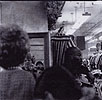
|
- Wheaton Research
- Living Under a Thin Film
- CD-R (Bake) 2000
- one track is a trio of Brent Gutzeit, Kevin Drumm,
and O’Rourke
|
|
|
- Cornelius Cardew
- Treatise
- 2CD (Hat Hut) 1999
- O’Rourke plays synthesizer and organ
- with Guillermo Gregorio, Fred Lonberg-Holm, Carrie Biolo-Thompson, Jim Baker, and conductor Art Lange
|
|
|
- Enon
- “Motor Cross”/“Burning The Bread”
- 7″ (Liquefaction Empire) 1999
- O’Rourke arranged, mixed and played melodica on the second song
|
|
|
- Mascott
- Follow the Sound
- CD/LP (Le Grand Magistery) 1999
- O’Rourke produces and plays on six tracks
|
|
|
|
|
|
- Superchunk
- Come Pick Me Up
- CD/LP (Merge) 1999
- O’Rourke also produces
- “Hello Hawk” is also available as a CD single with four non-album tracks; I don’t know if O’Rourke is credited on those tracks
|
|
|
- Smog
- Held
- CD-EP (Domino) 1999?
- O’Rourke co-produces
|
| 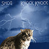
|
- Smog
- Knock Knock
- CD/LP (Drag City) 1999
- O’Rourke also produces
- “Cold-Blooded Old Times” was also released as a 7″ on Domino with additional material (with which O’Rourke was not involved)
- “Cold-Blooded Old Times” was included on the High Fidelity soundtrack
|
|
|
- Stephen Prina
- Push Comes to Love
- CD/LP (Drag City) 1999
- O’Rourke also produces
|
|
|
- Derek Bailey
- Playbacks
- CD (Bingo) 1998
- on one track, Bailey speaks (does not play) over prerecorded guitar duo material by O’Rourke and Loren Mazzacane Connors
|
|
|
- Loren Mazzacane Connors & Alan Licht
- Hoffman Estates
- CD/LP (Drag City) 1998
- with Kevin Drumm, Ken Vandermark, Rob Mazurek, Chad Taylor, Darin Gray, Josh Abrams, Jeb Bishop, Michael Colligan
- O’Rourke also produces, engineers, and contributes “additional arrangements”
|
|
|
- Butch Morris
- Cond. #70: Tit For Tat
- CD (For 4 Ears) 1998
|
|
|
- Anthony Braxton
- Compositions No. 10 & No. 16 (+101)
- CD (Hat Hut) 1998
|
|
|
- Guillermo Gregorio
- Ellipsis
- CD (Hat Hut) 1998
|
|
|
- Tony Conrad
- “Early Minimalism: May 1965”
- on Early Minimalism Volume One
- 4CD (Table of the Elements) 1997
- O’Rourke plays electric violin
- also credited with “additional engineering”
|
| 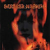
|
- Barbara Manning
- 1212
- CD/LP (Matador) 1997
- O’Rourke plays violin on “Trapped and Drowning”)
only, also engineered that track only
|
|
|
- Smog
- “Ex-Con”
- CD-single/7″ (Domino) 1997
- plays on 3 of 4 songs
- “Little Girl Shoes” (on which O’Rourke plays piano) was reissued on Accumulation: None CD/LP (Drag City) 2002
|
|
|
- Smog
- Red Apple Falls
- CD/LP (Drag City) 1997
- O’Rourke, listed as “James ‘Diamond Jim&rsquo
- O’Rourke”, plays bass, piano, organ, hurdy gurdy, and drums, and also co-produces
|
|
|
|
|
|
- Tony Conrad
- “July 95”
- on comp CD included with Halana #2 1997
- O’Rourke plays violin
|
|
|
- Miss High Heel
- Rough Mixes 2-9 Jan 96
- cassette (Hanson) 1996?
|
|
|
- Guided By Voices
- Under the Bushes, Under the Stars
- CD (Matador) 1996
- plays guitar on “He’s the Uncle”
|
|
|
|
|
|
- Cynthia Dall
- Untitled
- CD/LP (Drag City) 1996
- plays piano, drums, and electric guitar on one song each
- also produces and engineers on most tracks
|
![[cover]](thumbs/thumb-wildlove.gif)
|
|
|
|
- Tony Conrad
- “May”
- on split 7″ with Gastr del Sol
- 7″ (Table of the Elements) 1995
- the first 500 copies include a bonus 7″ by Tony Conrad called “Ten Years Alive on the Infinite Plain”, on which O’Rourke plays
|
|
|
|
|
|
- Denison/Kimball Trio
- “Landshark”/“Whirlpool”
- 7″ (Sub Pop) 1995
|
|
|
|
|
|
- Empirical Sleeping Consort
- The Layers of Awakening
- CD (Kronotop) 1994
- guitar on one track only
|
|
|
- Jeff Kowalkowski
- “Prelude to Houdini”
- on Passed Normal 4 comp
- CD (Fot) 1991
- played electric bass, also produced and engineered
|
|
|
- City of Worms
- Quester
- cassette (Irre Tapes) 1989
- cassette (Harsh Dept) 1991
- with Jeph Jerman (and others?)
- the Harsh Dept version was released in two different limited editions, one of 77 copies, the other of 50 copies
|
|
|
|
|
|
|
When O’Rourke both produced and played on a session, it is
listed in the “Appearances” section rather than here.
|
|
|
- Cynthia Dall
- Sound Restores Young Men
- CD/LP (Drag City ) 2002
- O’Rourke is one of two credited producers (along with Tim Green), and also engineers
|
|
|
- Tom Watson
- Country and Watson
- CD (Leiterwagen) 2001
- about half of album produced by O’Rourke
|
|
|
- Sangatsu
- Sangatsu
- CD (Weather/P-Vine) 2001
- also recorded and mixed by O’Rourke
|
| 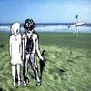
|
- Quruli
- Zukan
- CD/LP (Speedstar/JVC) 2001
- five of 15 tracks produced (and recorded, edited, and mixed) by O’Rourke
|
|
|
- Storm and Stress
- Under Thunder and Fluorescent Light
- CD/LP (Touch & Go) 2000
|
|
|
- Aluminum Group
- Pedals
- CD (Minty Fresh) 1999
|
|
|
- Stereolab
- Cobra and Phases Group Play Voltage in the Milky Night
- CD (Elektra/Duophonic) 1999
- 2LP (Duophonic) 1999
- O’Rourke produces about half of the tracks; one of them, “The Free Design”, is also available as an CD-EP/EP (on Duophonic) and video
|
|
|
- Sam Prekop
- Sam Prekop
- CD/LP (Thrill Jockey) 1999
- “A Cloud To the Back” included on promotional disc Rough Cuts: Music for Films comp CD (Rough Trade) 2000
|
|
|
|
![[cover]](thumbs/thumb-littlebirds.jpg)
|
- USA
- Little Birds
- CD/LP (Drag City) 1998
- recorded by O’Rourke
|
|
|
- Ex-Chittle
- Moving Solves Everything
- CD/LP (Kalliste) 1997
|
|
|
- The Bells
- The Ultimate Seaside Companion
- CD (Hit It!) 1997
- O’Rourke plays bass on one song and lap steel guitar on one song
- O’Rourke also engineered some songs
|
|
|
|
|
|
- U.S. Maple
- Sang Phat Editor
- CD/LP (Skin Graft) 1997
|
|
|
- Lake of Dracula
- Lake of Dracula
- CD/LP (Skin Graft) 1997
- producer credit shared with Randy Lancelot and Weasel Walter
|
![[cover]](thumbs/thumb-electroshock.jpg)
|
- Brainiac
- Electro-shock for President
- EP/CD (Touch & Go) 1997
- some mixing and editing by O’Rourke; the actual credit reads “Boogie Twitching by Jim O’Rourke”
|
| 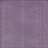
|
- David Grubbs
- Banana Cabbage, Potato Lettuce, Onion Orange
- CD (Table of the Elements) 1997
- recorded 2 of 3 tracks
|
|
|
- Bobby Conn
- Never Gonna Get Ahead
- 7″ (Truckstop) 1997?
- O’Rourke also did backup vocals
|
|
|
|
![[cover]](thumbs/thumb-scratchstitch.jpg)
|
- Melt Banana
- Scratch or Stitch
- CD/LP (Skin Graft) 1996
|
|
|
|
![[cover]](thumbs/thumb-longhair.jpg)
|
- U.S. Maple
- Long Hair in Three Stages
- CD/LP (Skin Graft) 1995
|
|
|
|
|
|
- Earth
- Legacy of Dissolution
- CD (No Quarter) 2005
- 2LP (Southern Lord) 2005
- one track (“Thrones and Dominions”) remixed by O’Rourke
- vinyl version is limited edition of 150 copies
|
| 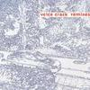
|
- Voice Crack
- Remixes
- CD (Ambush) 2004
- one track remixed by O’Rourke
|
|
|
- Kankawa
- Greatful Remixers
- CD (Pioneer Japan) 2002
- one track (“‘Roots Proof’ All Songs Use”) remixed by O’Rourke
- extra percussion by Tim Barnes
|
|
|
- Longwave
- Daysleeper
- 12″ (14th Floor) 2002
- contains the track “Daysleeper” from The Strangest Things CD, plus two remixes of the same track by O’Rourke and Aerogramme
|
|
|
- Tri-Dim + Jim O’Rourke & Barry Guy
- 2 of 2
- CD (Sofa) 2002
- one track is an O’Rourke remix of otherwise unreleased material by Tri-Dim; Barry Guy appears only on other tracks
|
|
|
|
|
|
- Oren Ambarchi
- “all acrostics”
- on Suspension
- 2LP (Staubgold) 2002
- remix by O’Rourke and Tim Barnes
- remix is only on vinyl edition, which is a limited edition of 500 copies
- original release: CD (Touch) 2001
|
|
|
- Sakana
- Little Swallow
- CD (Bad News) 2001
- two tracks remixed by O’Rourke
|
|
|
|
|
|
- Mice Parade
- Collaborations
- CD/LP (Bubble Core/After Hours) 2000
- O’Rourke remixed the Nobukazu Takemura/Mice Parade track
|
|
|
- Hecker
- “ts baby”
- on [R*] iso|chall
- CD (Mego) 2000
|
|
|
- Silvain Vanot
- “Un Air A Deux Voix”
- “Mary Ville Morte”
- on (En attendant) Tout Brille
- LP (Labels) 1999
- O’Rourke remixes two songs; on one he plays organ, bass and guitar and on the other he plays keyboards and harmonica
|
|
|
- Southall Riot
- “[?]”
- on Quality Goods
- 7″ (Earthworm) 1999
|
|
|
- Autechre
- “Characi”
- on WARP10 +3 REMIXES
- 4LP/2CD (Warp) 1999
- original is on the Cichlisuite EP
|
|
|
- Pastels
- “Leaving This Island”
- on Illuminati
- CD/LP (Domino) 1999
- string arrangements added (track not otherwise altered) by O’Rourke
- Japanese release is on the Dohb label
- track also included on The Wire Tapper #2 comp CD (The Wire) 1998 (included with The Wire #177, November 1998)
|
|
|
- Disinformation
- “Booming Bass”
- on Al-Jabr
- CD (Ash) 1999
|
|
|
- Kid Loco
- Prelude to a Grand Love Story
- CD (Atlantic) 1999
- one track, “Love Me Sweet”, is a remix by O’Rourke
of a track from Kid Loco’s 1997 CD A Grand Love Story
- O’Rourke remix also released as a 12″
|
|
|
|
| 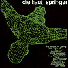
|
- Die Haut
- “Okinai”
- on Springer
- CD (Our Choice/Rough Trade Germany) 1998
|
|
|
- The Jesus Lizard
- “Needles for Teeth”
- on The Jesus Lizard
- CD/10″ (Jet Set) 1998
|
|
|
- The Sea and Cake
- “I Took the Opportunity to Antique My Endtable”
- on Two Gentlemen
- EP/CD (Thrill Jockey) 1997
- the name of the original track was “Do Now Fairly Well”
|
|
|
- RLW
- “Strictly Yours”
- on Tulpas
- 5CD (Selektion) 1997
|
|
|
- Ground Zero
- “Nani?”
- on Conflagration
- CD (Creativeman) 1997
- remix is credited to Gastr del Sol
- source material is from Ground Zero’s Consume Red CD
|
|
|
- Merzbow
- “House of Kaya”
- on Scumtron
- CD (Blast First) 1997
|
|
|
- Microstoria
- “NAMM Weekend Pass Mix”
- on Reprovisers
- CD (Mille Plateaux) 1997
- CD (Thrill Jockey) 1997
- 12″ (Thrill Jockey) 1997
- with Jeb Bishop (trombone)
- the contents of the CD are split across a series of 12″s
- the 12″ with the O’Rourke remix has a remix by Violent Onsen Geisha on the flip-side
|
|
|
- Tortoise
- “Reference Resistance Gate”
- on 12″ (Thrill Jockey) 1996
- on Remixed CD (Thrill Jockey) 1998
- on Remixed CD (Tokuma) 1998
- the flip side of the 12″ is a remix by Spring Heel Jack
|
|
|
- Oval
- “Do While”
- on 94 Diskont
- LP+12″ (Mille Plateaux) 1995
- LP+12″ (Thrill Jockey) 1996
- the CD versions on both Mille Plateaux and Thrill Jockey do not include this remix
|
|
|
- Tortoise
- “Initial Gesture Protraction”
- on Rhythms, Resolutions, and Clusters
- CD/LP (Thrill Jockey) 1995
- on A Lazarus Taxon
- 3CD (Thrill Jockey) 2006
|
|
|
- Labradford
- “The Church Song”
- on Excursions in Ambience: The Fourth Frontier comp
- CD (Astralwerks) 1995
|
|
|
- Main
- “Suspension (Hyaline)”
- on Ligature
- CD-EP/EP (Beggars Banquet) 1994
|
|
|
|
|
|
- Wilco
- Sky Blue Sky
- CD (Nonesuch) 2007
- O’Rourke provided string arrangements for
two tracks
|
|
|
- Joanna Newsom
- Ys
- CD (Drag City) 2006
- mixed by O’Rourke
|
|
|
- Loren Connors
- Night Through: Singles and Collected Works 1976–2004
- 3CD (Family Vineyard) 2006
- remastered by O’Rourke
|
|
|
|
|
|
- Franco Battiato
- Fetus
- CD (Water) 2006
- reissue liner notes by O’Rourke
|
|
|
|
|
|
- Sonic Youth
- Goo: Deluxe Edition
- 2CD (Geffen) 2005
- some of the bonus material was mixed by O’Rourke
|
|
|
- Judee Sill
- Dreams Come True
- 2CD (Water) 2005
- mixed for reissue by O’Rourke
|
|
|
- Thurston Moore
- “Electronicum”
- on The Noise Is All In Your Head comp
- CD (Gold Soundz) 2004
- engineered by O’Rourke
- edition of 500 copies
|
|
|
- Miss Nelson & Bruce
- Way-Out Record for Children
- CD (King) 2004
- reissue liner notes by O’Rourke
|
|
|
- John Fahey
- Live in Tasmania
- CD (Fantasy) 2004
- reissue liner notes by O’Rourke
|
|
|
- Luciano Cilio
- Dell’ Universo Assente
- CD (Die Schachtel) 2004
- liner notes by O’Rourke
|
|
|
- Archimedes Badkar
- Tre
- CD (MNW) 2004
- liner notes by O’Rourke
|
|
|
- Rob Mazurek
- Sweet and Vicious Like Frankenstein
- CD (Mego) 2004
- mastered by O’Rourke
|
|
|
- Foot
- on Eye Candy
- comp VHS (Breathmint) 2003
- the band (Thurston Moore, Don Fleming, Tom Verlaine, and J Mascis, with
guest O’Rourke) is seen sitting a car listening to the stereo; O’Rourke
ends up on the roof of the car; this was taped
outside Flywheel in Easthampton, MA on September 15, 2001
- limited edition of 50 copies
|
|
|
- Loren Connors & Alan Licht
- In France
- CD (FBWL) 2003
- mastered by O’Rourke
|
|
|
- Alan Licht
- A New York Minute
- 2CD (XI) 2003
- “A New York Minute” edited by Aaron Mullan and O’Rourke; “Freaky Friday” recorded by Mullan and O’Rourke
|
|
|
- “[?]”
- composition 2003
- the group Zeitkratzer (http://www.zeitkratzer.de/)
list in their repertory a piece by O’Rourke referred to as “new piece 2003”;
it was also on their concert program at the GAS-Festival in Goteborg, Sweden in October 2003
|
|
|
- Moz / Thurston Moore
- Tribute to MLK Jr.
- split CD (Breathmint) 2003
- Moore’s half recorded by O’Rourke
- limited edition of 500 copies
|
|
|
- Dredd Foole and the Din
- The Whys of Fire
- CD (Ecstatic Yod) 2003
- mastered by O’Rourke
|
|
|
- Lee Ranaldo
- Outside My Window The City Is Never Silent: A Bestiary
- LP (Hell’s Half Halo/Chocolate Monk) 2003
- this is a collage of outtakes, found sound, and other recordings;
O’Rourke is credited as one of the sources
|
|
|
- Yapoos
- Dadada ism
- CD (P-Vine) 2003
- reissue of 1992 CD on Planet Earth/Toshiba EMI
- liner notes by O’Rourke
|
|
|
- Yapoos
- Dial Y
- CD (P-Vine) 2003
- reissue of 1991 CD on EMI Toshiba
- liner notes by O’Rourke
|
|
|
- Andrew Chalk
- Over the Edges
- CD (Streamline) 2003
- reissue of 1999 LP
- remastered by O’Rourke
|
|
|
- Masayuki Takayanagi
- Three Improvised Variations on a Theme of Qadhafi
- CD (Jinya) 2002
- liner notes by O’Rourke
|
|
|
- Geert-Jan Hobijn and Jim O’Rourke
- glass 7″ 2002
- O’Rourke was one of seven artists invited to treat glass masters prepared by Hobijn; only two copies of this art object exist
- included in “Covered Up” exhibition at Neon Gallery as part of the Look at the Music/SeeSound festival
|
|
|
- John Fahey
- The Best of John Fahey, 1959–1977
- CD (Takoma) 2002
- O’Rourke wrote some of the liner notes
|
|
|
- Akio Suzuki
- Odds and Ends
- 2CD (Hören) 2002
- O’Rourke wrote some of the liner notes
|
|
|
- Arthur Doyle Electro-Acoustic Ensemble
- Plays the African Love Call
- LP (Ecstatic Yod) 2002
- according to the promotional materials, “the music here was sonically dicked-w/ for many many hours by Jim O’Rourke”
|
|
|
- Otomo Yoshihide’s New Jazz Ensemble
- Dreams
- CD (Tzadik) 2002
- includes version of O’Rourke composition “Eureka”
|
|
|
- Otomo Yoshihide’s New Jazz Quintet
- ONJQ Live
- CD (DIW) 2002
- includes version of O’Rourke composition “Eureka”
|
|
|
- Wilco
- War On War
- CD-single (Nonesuch) 2002
- includes “War On War” (from Yankee Hotel Foxtrot), “The Good Part” (a previously unreleased track from the same sessions, mixed by O’Rourke), and a live “I’m the Man Who Loves You” which I don’t think O’Rourke was involved with
|
|
|
- Wilco
- Yankee Hotel Foxtrot
- CD/2LP (Nonesuch) 2002
- mixed by O’Rourke
|
|
|
|
|
|
- Gene Moore
- Twisted Wires
- CD (Ecstatic Peace) 2001
- “tweaking” by O’Rourke
|
|
|
- Axel Dörner & Kevin Drumm
- CD (Erstwhile) 2001
- 3 tracks recorded by O’Rourke
|
|
|
- Möslang-Guhl
- Knack On
- CD (Atavistic) 2001
- O’Rourke wrote the liner notes to this reissue of a 1982 LP
|
|
|
- Zero 7
- “Ghost Ship in a Storm”
- on Another Late Night
- CD (Kinetic) 2000
- remix of the track from Eureka
|
|
|
- Nachtluft
- Belle-View I-IV
- CD (Atavistic) 2000
- O’Rourke wrote the liner notes to this reissue of a 1986 LP
|
|
|
- Dean Roberts
- And the Black Moths Play the Grand Cinema
- CD (Ritornell) 2000
- Tim Barnes plays electronics using MSP’s that O’Rourke made for him
|
|
|
- Kim Gordon, DJ Olive and Ikue Mori
- SYR 5
- CD/2LP (SYR) 2000
- mixed by O’Rourke
|
|
|
- Will Oldham & Rian Murphy
- All Most Heaven
- 12″/CD-EP (Drag City) 2000
- arrangements by O’Rourke; O’Rourke also performs
|
|
|
- Bride of No No
- B.O.N.N. Apétit!
- CD (Atavistic) 2000
- mixed by O’Rourke
|
|
|
- Merzbow
- Merzbox
- 50CD (Extreme) 2000
- includes Merzbook: The Pleasuredome of Noise book with essay by O’Rourke; the book is now available separately in paperback
|
|
|
- John Fahey
- How Bluegrass Music Destroyed My Life
- book (Drag City) 2000
- introduction by O’Rourke
|
|
|
- Pluramon
- Bit Sand Riders
- CD (EFA/Caroline) 2000
- O’Rourke listed as “technical assistance”
|
![[cover]](thumbs/thumb-moonlanding.jpg)
|
- Darin Gray
- “Serra’s Twain”
- on Moonlanding 3/4
- 7″ (Helicopter) 1999
- mixed by O’Rourke
|
![[cover]](thumbs/thumb-lostmariner.jpg)
|
- Darin Gray & Loren Mazzacane Connors
- The Lost Mariner
- CD (Family Vineyard) 1999
- O’Rourke mixed and mastered
|
|
|
- Kevin Drumm
- Comedy
- CD (Moikai) 2000
- two tracks recorded by O’Rourke
|
|
|
- Saint Etienne
- Places to Visit
- CD-EP (Sub Pop) 1999
- O’Rourke is credited with “electronic wizardry”
|
|
|
- Loren Mazzacane
- Unaccompanied Acoustic Guitar Improvisations Vol. 1-8 1979-1980
- 4CD (Ecstatic Peace) 1999
- remastered by O’Rourke and Jeremy Lemos
|
|
|
- Mats Gustafsson
- The Education of Lars Jerry
- CD/LP (Xeric) 1999
- recorded by O’Rourke
|
|
|
- In Zenith
- Building a Better Future
- CD (Miguel) 1998
- mastered by O’Rourke
|
|
|
- Guillermo Gregorio, Mats Gustafsson & Kjell Nordeson
- Background Music
- CD (Hat Hut) 1998
- mastered by O’Rourke
|
|
|
- Robert Johnson and the Browns
- Robert Johnson and the Browns
- LP (no label) 1998
- O’Rourke is listed under “aids”
|
![[cover]](thumbs/thumb-godschaos.jpg)
|
- The Flying Luttenbachers
- Gods of Chaos
- CD (Skin Graft/ugEXPLODE) 1997
- O’Rourke assisted with the editing of the album (credits say “Special Thanks to Jim O’Rourke and his computer”)
|
|
|
- Roger De La Frayssenet
- Kitnabudja Town
- CD (Metamkine) 1997?
- O’Rourke used as sample source
|
| 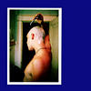
|
- Will Oldham
- Little Joya
- CD-EP/EP (Drag City) 1997
- mastered by O’Rourke
|
|
|
|
|
|
- Splintered
- Moraine
- LP (Suggestion/No Risk No Fun) 1996?
- O’Rourke’s Use DAT used as sample source
|
|
|
- AMM
- Laminal
- 3CD (Matchless) 1996
- O’Rourke wrote short essay in booklet
|
|
|
- John Corbett and David Grubbs
- “Exoteric”
- on Dig This: A Benefit Compilation for Doorika comp
- CD (Sweet Pea) 1996
- recorded by O’Rourke
|
|
|
- Scissor Girls
- Staticland
- 10″ (Load) 1996
- the credit reads “J-O’Rourke:iss M. Poisson”, and “Mr. Poisson” is one of the song titles; draw your own conclusions
- reissued with other material on the Here is the “Is-Not” CD (Atavistic)
- cover art depicted is of the CD
|
|
|
- Asmus Tietchens
- Ptomaine
- 3LP (RRRecords) 1996
- O’Rourke’s track from the RRR-100 7″ is used as a sample source
|
|
|
- RLW
- Revue Et Corrige
- CD (Trente Oiseaux) 1995
- O’Rourke provides “technical assistance”
|
|
|
- RLW
- When freezing air stings like ice I shall breathe again
- CD (Streamline) 1995
- graphics by O’Rourke and Sue Wolf
|
|
|
- Merzbow and Christoph Heemann
- Sleeper Awakes on the Edge of the Abyss
- CD (Streamline) 1993
- graphics by O’Rourke
|
|
|
|
|
|
|
|
Titles are selected by O’Rourke and are mostly reissues.
Manufacturing and distribution is provided by Drag City;
their Moikai page is
here.
|
|
|
- M13
- Triangles
- Triangles
- CD/LP 2001
- Triangles is Kevin Drumm and Leif Elggren
|
|
|
- M12
- Phill Niblock
- G2,44+/x2
- CD 2002
- some of the source recordings of the guitarists were recorded by O’Rourke
|
|
|
- M11
- Orton Socket
- 99 Explosions
- CD/LP 2001
- solo electronics by Rob Mazurek
|
|
|
- M10
- Aki Tsuyuko
- Ongakushitsu
- CD/2LP 2000
- original label: Childisc (Japan)
|
| 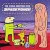
|
- M9
- Space Ponch
- The World Shopping with Space Ponch
- CD 2000
|
|
|
- M8
- Kevin Drumm
- Comedy
- CD 2000
|
|
|
- M7
- Rafael Toral
- Sound Mind Sound Body
- CD 2000
- original label: Ananana
|
|
|
- M6
- Pita
- Get Out
- LP 2000
- original label (on CD): Mego
|
|
|
- M5
- Fennesz
- Plays
- CD-single 1999
- original label: Mego [on 7″ vinyl]
|
|
|
- M4
- Ray Russell
- Live at the I.C.A./Retrospective
- 2CD 2000
- original label for Live at the I.C.A.: RCA (UK); other material previously unreleased
|
|
|
- M3
- The Frogs
- The Frogs
- CD 1999
- original label: Frogs
|
|
|
- M2
- Lithops
- Umit Uni
- CD 1998
- original label: Sonig; original was vinyl only
|
|
|
- M1
- Nuno Canavarro
- Plux Quba
- CD/LP 1998
- original label: Ama Romanta
|
|
|
Dexter’s Cigar was a record label devoted exclusively to reissues. Releases were selected by O’Rourke and David Grubbs. Drag City provided manufacturing and distribution.
|
|
|
|
|
|
- dex14
- Rafael Toral
- Wave Field
- original label: Moneyland
|
|
|
- dex13/DC106
- Gastr del Sol
- The Serpentine Similar
- original label: TeenBeat
|
|
|
- dex12
- Folke Rabe
- What??
- original label: Wergo
|
|
|
- dex 11/DC103
- Squirrelbait
- Skag Heaven
- original label: Homestead
|
|
|
- dex10/DC102
- Squirrelbait
- Squirrelbait
- original label: Homestead
|
|
|
- dex9/DC96
- Art & Language and the Red Crayola
- Corrected Slogans
- original label: Music Language
|
![[cover]](thumbs/thumb-aloha.jpg)
|
- dex8
- Henry Kaiser
- Outside Aloha Pleasure
- contains most of both the single LP Outside Pleasure and the double LP Aloha
- original label: Metalanguage
|
|
|
- dex7
- Loren Mazzacane Connors
- In Pittsburgh
- original label: St. Joan
|
|
|
- dex6
- Merzbow
- Rainbow Electronics 2
- the never-before-released companion disc to Rainbow Electronics, still available on the Alchemy label
|
|
|
|
|
|
|
|
|
- dex3
- Circle X
- Circle X
- original label: unknown, possibly “P.A.I.” or none
|
|
|
- dex2/DC80
- Red Crayola with Art and Language
- Kangaroo?
- original label: Rough Trade
|
|
|
- dex1/DC49
- Mayo Thompson
- Corky’s Debt to His Father
- actually on Drag City, but retroactively declared to have been a Dexter’s Cigar release
- original label: Texas Revolution
|
|
|
O’Rourke has described Distemper as “the forebearer to Dexter’s
Cigar.” The Henry Kaiser, Derek Bailey, and Voice Crack discs on
Dexter’s Cigar were originally intended for release on Distemper.
|
|
|
- Distemper 001
- Merzbow
- Ecobondage
- original label: ZSF Produkt
|
|
|
|
|
|
Note: the placement of some interviews might be off by a year.
|
|
|
2004
|
|
|
The Wilco Book (published October 2004)
includes some interview material with O’Rourke on the subject of Wilco
|
|
|
2003
|
|
|
Suicide Girls (5/29/03)
(link directly to interview)
|
|
|
2002
|
|
|
5 minute mini documentary by Laurent Gérard; includes interview footage
as well as live footage of Mirror in Bern in April 2002
(link directly to documentary)
|
|
|
amazon.co.uk
(link directly to guest edit)
|
|
|
altcritic.com
(link directly to interview)
|
|
|
BB Gun (summer ’02)
(link directly to interview)
|
|
|
Weekly Dig (5/02)
(link directly to interview)
|
|
|
PurJus (4/14/02)
(link directly to interview)
|
|
|
RollingStone.com (4/11/02)
(link directly to interview)
|
|
|
Rocket in the Pocket webzine (2/02)
(link directly to interview)
|
|
|
The Independent (1/11/02)
(link directly to interview)
|
|
|
2001
|
|
|
Cucamonga 12/17/01
(link directly to interview)
|
|
|
Rock’s Backpages Dec. 2001
(link directly to interview)
|
|
|
F Newsmagazine Nov. 2001
(link directly to interview)
|
|
|
Urbanmag
(link directly to interview)
in Dutch
|
|
|
2000
|
|
|
aMAZEzine #5
|
|
|
A Key to the Social Club (link directly to interview)
|
|
|
The Guardian (link directly to interview)
|
|
|
citysearch.com (link directly to interview)
|
|
|
The Wire 1/00
one paragraph on favorites of 1999
|
|
|
1999
|
|
|
RollingStone.com 5/7/99 (link directly to interview)
|
|
|
Konketsu (link directly to interview)
|
|
|
Brave New Waves
at one time this was available online as RealAudio
|
|
|
Gaesteliste ezine (text in German) (link directly to interview)
|
|
| Clicks and Klangs website (link directly to interview)
|
|
|
Ink 19 ezine (link directly to interview)
|
|
|
The Wire Jan. 1999 (“Invisible Jukebox” feature)
|
|
|
Deep Listenings #4
Italian-language zine
|
|
|
Item #1
(not sure if this ever actually came out)
|
|
|
Uno Mas (link directly to
interview)
|
|
|
Tape Op #16
(link directly to excerpts from interview)
|
|
|
The Inter-net-viewer (link directly to interview)
a Dutch translation of this interview appeared in Fake
|
|
| Badaboom Gramaphone #4 (link directly to interview)
O’Rourke and Royal Trux interview each other
|
|
|
Uzine 99.1 ezine
(link directly to interview)
|
|
|
Uzine 99.2 ezine
(link directly to interview)
|
|
|
Tiny Cake ezine (interview lifted from elsewhere?) (link directly to interview)
|
|
|
1998
|
|
|
Auf Abwegen #25
German-language magazine
I’m not actually certain this has an interview,
though Jim’s name is on the cover; anyone know for sure?
|
|
|
Gonzo Circus #30
Dutch-language zine
|
|
|
Earshot (San Francisco
Bay Guardian) 10/7/98 (apparently no longer online)
|
|
|
Willamette Week (link directly to interview)
|
|
|
Perfect Sound Forever 3/98 (link directly
to interview)
|
|
|
Music #2
|
|
|
1997
|
|
|
earSHOT 11/97
(link directly to interview)
|
|
|
The Wire Nov. 1997 (cover story)
|
|
|
Request May 1997 (very short)
|
|
|
Chicago Reader 9/12/97 (link directly to story/interview)
|
|
|
Frequency #1 (link directly to interview)
|
|
|
luxusliner #1 (link directly to interview)
|
|
|
Magnet #30
|
|
|
1996
|
|
|
Octopus #5 (Fall 1996) (text in French)
|
|
|
1995
|
|
|
The Wire Jan. 1995 (short article/interview)
|
|
|
Option #60 (January 1995)
|
|
|
Creative Loafing 4/15/95 (link directly to interview)
|
|
|
E.S.T. #5
(link
directly to interview)
|
|
|
Dead Angel #11
|
|
|
Art and Performance 4/7/95
|
|
|
1993
|
|
|
N D #17
|
|
|
1992
|
|
|
Browbeat #1
|
|
|
Unknown date
|
|
|
Blast online
(link directly to interview)
|
|
|
Blow-Up #8 (text in Italian)
|
|
|
CBC Radio Canada (link
directly to RealAudio interview)
|
|
|
De/Create #3
|
|
|
Exile Osaka #3 (very short)
|
|
|
Fort Apache (text in Italian) (link directly to interview)
|
|
|
Hit It or Quit It #14 (link directly to interview)
|
|
|
Megalon Records web site
(interview apparently no longer online)
|
|
|
Merge #5
|
|
|
Pannonica ezine (text in French)
|
|
|
Popwatch #8 (promised continuation in #9 did not appear)
|
|
|
Resonance #7.1
|
|
|
You Could Do Worse #3
|
|
|
|
|
|
|
Answers to Your Questions
You always write to ask
How come I don’t write back
Well I could tell you
But then I’d have to write
A letter that would start
I finally found it in my heart
Not to forgive you
What do you want me to say
Ask you how was your day
Well I could tell you
But then I’d have to care
What you did last night
Or the thousands since you crossed my sight
I wouldn’t know you
Is there a need for me to hear every last detail
Of pleasantries that accumulate like unwanted mail
If it’s as bad as you say
Maybe this will make it go away
This is an answer
Stupid as the Sun
Every little hair on my neck is a wreck
Black and blue because of you
My back’s out of place
I need a brace and my face is askew
Now that’s hard to do
Come on let me down
We can work something out
If my dad comes by you’ll fry
He’ll give you something to write about
It was funny at first
Now I’m cursed with the worst living will
On this hill
You think I could get a bit
Of your soul’s debt and free will
Because I’m footing the bill
Come on let me down
You’ve all had your fun
Even my mom’s given up on me
I’m as stupid as the sun
Got assigned here
Not a good career
Preacher man in demand
When I took this job on it said
I’d get a lot of sun, sea, and sand
And a burial plan
Come on let me down
I’m resigning now
I got an offer from the other guy
That’s starting to look good right now
Thou Shalt Wilt
Now gather round
And check this shit out
I found a simple way
To keep us all devout
If there’s one thing we can all agree about
Why not make it ten
And banish any doubt
Let’s start it rolling by covering number ten
Cut off their heat then they’ll beat a retreat, amen
Now we come to number nine
Falls neatly next in line
Whoa what happened to number ten
Don’t think we’ll see them here again
Steal a look at number eight
What better way to procreate
Just take ’em out one at a time
You can’t be serious
They look so good in their wedding dress
I need time to assess
I don’t want to acquiesce
Six has a spicy ring to it
No harder one to commit
I think this one will be a hit
Now that’s what I call holy writ
We want to take a closer look at number five
Could it apply if implied that they’re not alive
Number four is such a pain
The sabbath thing is so arcane
I don’t want to desecrate
My only day to sleep in late
Don’t take his name in vain
From this one you want to abstain
We must set a clear mandate
The best damn way to conjugate
We’re almost to the end
If heaven you want to ascend
Just take ’em out one at a time
You shall have no other god but me
You shall have no other god but me
You shall have no other god but me
|
|
|
Elegant Transaction
Be careful when you take a call for someone else
(Not a smart way to begin)
And get embroiled in someone else’s life
(You don’t know where that phone’s been)
And don’t strike a conversation with a cigarette
Like an old flame, burned up, and out of breath
A slip of the tongue is all it takes
(It seems you need a helping hand)
To find yourself in someone else’s place
(Back in the saddle again)
And don’t pretend you don’t know
Where it’s heading for
A connection all the same
Exchange small talk about the good old lays
(It seems they’ve done better than you)
Your stories match despite the different names
(I guess that all you heard was true)
And don’t go along unless you’ve lost your way
A connection all the same
Like urine loves cold slate
So Long
Don’t look at me, you won’t find me there
Found a lodger for my face
Don’t bother asking where I have been
I sent someone in my place
Takes so long, to go wrong, say so long to yourself
It’s so wrong, to go on, to go on with yourself
Don’t trouble yourself to ask me
The odds are I can’t tell
If I said I love you
I was talking to myself
Takes so long to go wrong, say so long to yourself
It’s so wrong to go on, to go on with yourself
Takes so long when you’re gone, say so long to yourself
It’s so wrong to go on, to take on by yourself
|
|
|
All Downhill From Here
Don’t believe a word I say
Not that you would anyway
I may be insincere
But it’s all downhill from here
If I seem a bit remote
You’ll feel better if you say I’m a misanthrope
Or whatever floats your boat
As for me, I’d rather sink my own
Even though I’m here, you should feel all alone
Maybe the point of this you’ve just outgrown
There are names for me that are better known
Just draw a line and I’ll add my own
Insignificance
I’m still waiting
For a sign
That describes
How it’s all gonna end
And arrives
At a time
When it seems like
It had failed me
Failed
Once again
Like a friend
Who needs you
Like a house
Needs a floor
To know
When it’s been walked on
To know
How it feels
To wait
To be lived in
It would be easy
To stay
This way
If it weren’t for
A little problem
That I see
Underneath
Beneath my complaining
Like a wheel
That needs oil
Like a plant
That needs reminding
That it’s nothing
Without soil
Although
Then it’s stuck there
Like a crumb in bread
Like the seeds in an apple
(Everything
That you felt
Was someone else
Giving you something/
It’s never too late
To start to regret
Every step
You’ve taken
Every word
You’ve said)
Therefore I Am
Me, I’m getting better everyday
That’s what I said
Don’t believe what you’ve heard
It’s not like I want to be king
But I can’t help myself
It’s just that I am
Sorry, but I found someone new
To spend time
Instead of you, I spend it with me
You see, I’ve traveled round the world
I’ve seen so many things
Why am I talking to you?
Why do you hide, behind, somebody else
There’s one too many, in this room, and I think it’s you
As you can see, I’m a happy guy
Don’t need nothin’ to get me down
’Cause I’ll always have you
We are, are on a sinking ship
But I’d like to stay on board
And shoot the cannons at you
Why do you hide, behind, somebody else
There’s one too many, in this room, and I think it’s you
Memory Lame
It’s quite a gamble to speak out of place
Those things could kill you but so could your face
What occupies me, pays a low rent
Because fondness makes the heart grow absent
These things I say, may seem kinda cruel
So here’s something from my heart to you
Looking at you, reminds me of looking at the sun
And how the blind are so damn lucky
Those holes on your face could be used better ways
Breathing’s a distraction when you chatter away
These things I say, may seem to be lies
To seem risque, or sensationalized
And too many people can remember your name
Always walking you down memory lame
These things I say, may seem to offend
But not half as much, as I’d like to intend
Listening to you, reminds me of
A motor’s endless drone
And how the deaf are so damn lucky
I’d be happy, if life came to a stall
Then I wouldn’t need my senses at all
These things I say, might seem out of line
But day to day, I’m right every time
Looking at you, reminds me of
Looking at the sun
Too long
You’ll find
That in no time
You’ll be talking to yourself
Along with everybody else
Then you’ll despise
The look in their eyes
It may be difficult to tell
If your looking at yourself
And you look fine
If you don’t mind
That gaping hole that’s on your face
A black hole that’s out of place
And out of time
In a tight bind
To find something smart to say
When a silence comes your way
Good Times
I may be dressed as a doctor dear,
But I’m not, I’m just acting up
Got high hopes, a passing thought
I may act like a bombardier
But don’t be fooled, cause my aim is off
No need for alarm, I’ll catch you next time
I’d like to raise the Titanic here
Take a walk, through it’s molding streets
And feel right at home, ’cause the dead don’t talk
It’d be so nice, if you weren’t here
Empty air, where you used to stand
Like an empty plate, that gets bussed away
Get A Room
It’s always me in the only seat
That has a canopy
There to screw up the best laid plans
Of those with company
I’d like nothing more to do
Than to watch the desperation on your face
I might send you straght to hell
Like it’s worse to end up in this place
If I gave you, one night to live
Would you know who to choose to take home
And if she falls asleep before the night is through
Because she has to go to work
And you don’t
And the night’s getting longer
And your skin’s getting colder
And you won’t get much older
And you try to move towards her
But you can’t move your shoulder
And you’re sight’s getting dimmer
Maybe if you kick her
But your leg’s getting weaker
And she’s such a deep sleeper
And you would get a snorer
To share your last hour
You sure picked a winner
And time’s seeming slower
And now you can’t see her
All you see is a timer
Moving backwards and forwards
And the night’s getting longer
And your skin’s getting colder
Life Goes Off
You used to be quite content with your shower cap
I guess now I know you feel more at home
With a case of Handi-Wrap
You’d hold your own if you thought that it was clean
At least give me some gloves to wear
Or a picture of St. Augustine
If I were to die with these things on, can’t say I didn’t try
I’d think that you would try to find something to do
With my old school tie
That doesn’t turn my skin blue
Is it hot in here, or do I feel a little draft
From these pants that you brought for me to wear
The ones that have no back
If I were to die with these things on, you might want to try
Another size
I’d take your name, if I thought it’d do me good
If it’s all the same to you
I’ll just take a look under your hood
If you were to die with this thing on
You coulda chose a better style
And now that you’ve gone off
And all of this has passed
I don’t recall your face no more
But you left behind your mask
If I were to die with these things gone
I’d be frozen with a smile
|
|
|
Fuzzy Sun
What you call a pain
I call weeding out
And what you call the rain
Comes out of my mouth
Fuzzy sun
Gets you one by one
Fuzzy sun
Gets the job well done
Rolling drunks for their cigarettes
Frightening babies that aren’t born yet
You feel I’ve passed you by
You feel that you’ve been robbed
Well nothing will feel worse
Than dying on the job
Fuzzy sun
When you have come undone
Fuzzy sun
A boy must have his fun
A cigarette to brand a baby’s arm
A bit of ash in his face keeps him warm
The Workplace
Women look good here, with their suits on
It suits them
Men look good here, with their suits on
It befits them
Women look good here, with men’s clothes on
It contains them
Men look good here, with women’s clothes on
It betrays them
Halfway to a Threeway
I used to have none
Now with you, I’ve got one
If I could get just one more
Then you know what you’re in for
You ain’t getting any sleep tonight
I hope that you girls don’t fight
And I hope that you won’t run away
’Cause I’m halfway to a threeway
I tried again and again
To indulge in just one sin
All you have to do is lie there
While I push aside your wheelchair
And I do everything it takes
To change your mind and apply your brakes
So I know that you can’t roll away
’Cause I’m halfway to a threeway
Can’t wipe the smile off my face
When you strut by in your leg brace
You just can’t climb the stairs
And you ain’t got any hair
I just can’t get you to sit
You and your stupid epileptic fits
And I know that you can’t run away
’Cause I’m halfway to a threeway
As I lay you down on my bed
It don’t matter that you’re brain dead
I can get so you close to ya
Now that you’re in a coma
I’ll make it sweet but short
When I pull out your life support
And I know that you’ll just fade away
Now I’m halfway to a threeway
And I know that you’ll just fade away
Now I’m halfway to a threeway
|
|
|
Women of the World
(by Ivor Cutler)
Women of the world take over
’Cause if you don’t the world will come to an end
And it won’t take long
Ghost Ship In a Storm
Nothing makes me want to disappear
As when someone opens their mouth
It’s just my luck
I get hit by a car
While carrying a cake
Dripping cherries
Onto pavement
Bride and groom on my face
I’m not there like a ghost ship in a storm
It only figures
That I’d ride my bike
Into wet cement
And as I’m sinkin’
The last thing that I think
Is did I pay my rent
I ride through like a ghost ship in a storm
Movie on the Way Down
There’s that word again
Pride
Do you pride yourself on being
Polite?
Do you feel pride when you’re alone?
Does the mirror say good day, today?
Does your family make you feel pride?
Do the pictures keep you warm?
Is your smile so easily worn?
Worn away
Do you feel proud?
Something Big
(lyrics by Hal David)
Like a grain of sand
That wants to be
A rolling stone
I want to be the man
I’m not,
And have the things
I really haven’t got
And that’s a lot
There’ll be joy
And there’ll be laughter.
Something big is what I’m after now
Yes, it’s what I’m after now
After taking, take up giving,
Something big is what I’m living for
Yes, it’s what I’m living for
Living for
Why must I go on
And fill my life with little things
When there are big things I must do
And lots of dreams
That really should come true
Before I’m through
Eureka
Hello, Hello, can you hear me?
Are your skies clear and sunny down there?
Even in this rain the breath of the breeze is reaching me here
Here on this phone
A quarter a day room for me
And as things stay the same
I’m quickly running out of change
You’re thinking on your feet
While you’re sitting there on your ass
Fresh crease in your shirts
No stain of sweat on your back
There’s no need
There’s an employee
To make up for all of your slack
A seed don’t make a tree
Without a servant who waters the grass
Happy Holidays
I’m going to a place
Where the women have nothing on
But the radio
Turned up to 10
Too loud for me to think
I’m hoping if I blink
I don’t wake up here
One of life’s greatest sins
Is that you’re over when it begins
Goodbye mouth canyon
You were very much to see
But I only came to leave
|
|
|
|
- 1 Jan ’14: either updated or deleted all entries
previously marked as “forthcoming”
- 30 Sep ’08: added new O’Rourke 7″ on Touch
- 29 Sep ’08: added new Original Silence album
- 19 Oct ’07: added new Red Krayola album;
updated details on forthcoming Long Night
set; removed forthcoming Supreme Indifference disc; kept listing for
SOUND + ART release, but don’t expect it imminently; mentioned
Alan Licht’s forthcoming book
- 1 Jun ’07: further revised the entry for Corona: Tokyo
Realization (aka Translate Takemitu)
- 15 May ’07: added new Wilco disc
- 29 Apr ’07: added The Wilco Book to interviews section
- 28 Apr ’07: vinyl edition of The Voloptulist is out
- 27 Apr ’07: added cut on forthcoming Guilt by
Association comp
- 25 Apr ’07: added Takayanagi disc with liners by O’Rourke
- 23 Apr ’07: added Osorezan (O’Rourke/Gray/Corsano) disc;
Merzbow/Giffoni/O’Rourke disc is now out; Original Silence disc
is now out
- 12 Apr ’07: added Prisoner soundtrack CD
by Otomo Yoshihide
- 10 Apr ’07: added forthcoming Merzbow/Giffoni/O’Rourke
CD; added link to 1999 Rolling Stone piece
(also fixed link to 2002 Rolling Stone and altcritic.com pieces)
- 22 Jan ’07: Explosion and Corona:
Tokyo Realization (formerly Translate Takemitu)
are now available; added more details on the latter
- 21 Jan ’07: added Noise DVD which includes
Jim’s film Door
- 20 Jan ’07: added Sonic Youth B-sides and
rarities collection
- 16 Jan ’07: added track on Avanto 2006 comp;
20 Songs Less reissue
is now out; corrected edition size of the
6 Oscillators 87/Guitar 88 LP
- 8 Jan ’07: added forthcoming Miss High Heel disc
- 24 Nov ’06: added Kahimi Karie album;
made a separate Mirror section
- 20 Oct ’06: a few things that were listed as
forthcoming are now out: Funeral Parade of
Roses DVD, Synth Destruction #2 CD-R, Melbourne
Direct 2LP
- 17 Oct ’06: revised credits for Takemitsu disc
- 16 Oct ’06: Joanna Newsom disc is out
- 15 Oct ’06: added forthcoming disc
Translate Takemitu
- 14 Oct ’06: noted that SOUND + ART release
can be preordered from the label
- 25 Aug ’06: added forthcoming Joanna Newsom album
- 24 Aug ’06: added forthcoming reissue of
20 Songs Less
- 23 Aug ’06: added forthcoming Giffoni/O’Rourke
CD-R; solo LP on No Fun is now out; added forthcoming Supreme
Indifference disc;
added new Tortoise 3CD set that includes 1995 remix
- 28 May ’06: added Night Through by Loren Connors
- 22 May ’06: added Funeral Parade of Roses DVD
- 16 May ’06: added Background Music by
Gregorio/Gustafsson/Nordeson
- 15 May ’06: added Mix Tape: The Art of
Cassette Culture book
- 12 May ’06: added “El Oido” by Lee
Ranaldo
- 11 May ’06: link to Kiyoshi Kurosawa interview
and Lost in the Grooves book
- 9 May ’06: added Folke Rabe & Jan Bark disc,
and forthcoming SOUND + ART release
- 2 May ’06: added Kankawa remix
- 1 May ’06: improved and corrected entry for
Breathmint videocassette (which I had listed with the wrong title);
added link to photo from Neon Gallery’s Snap Shots exhibition
- 30 Apr ’06: noted that O’Rourke does not appear
on Mimir’s track on the Kollabaris comp; clarified
the relationship of “Corona” from The Wild Blue
Yonder to Grizzly Man
- 29 Apr ’06: added forthcoming Diskaholics Anonymous
Trio disc (Live in Japan, Vol. 2)
- 28 Apr ’06: added forthcoming Original Silence disc
- 26 Apr ’06: removed extra entry for The Noise Is
All In Your Head comp (there is no solo O’Rourke cut)
- 25 Apr ’06: removed some forthcoming entries that
have become unlikely (Dream Aktion Unit,
Moore/Ranaldo/Sauter/Dietrich collab, trio with Barnes and Mori,
Fontaine/SY, Box 100); expanded Grizzly Man entry;
more info on forthcoming solo releases on Dom Bartwuchs and No Fun
- 24 Apr ’06: duo disc with Akira Sakata is now out;
added a forthcoming second volume
- 19 Apr ’06: noted that O’Rourke’s track
on Doctors Without Borders is taken from Old News
- 17 Apr ’06: lyrics corrections
- 12 Apr ’06: corrections to Beth Orton entry
- 10 Apr ’06: added track on New Blockaders tribute comp;
more info on Blockaders/Moore/O’Rourke disc
- 9 Apr ’06: added forthcoming box set on Dom Bartwuchs;
added Otomo Yoshihide’s Dreams
- 7 Apr ’06: New Blockaders/Thurston
Moore/O’Rourke collaboration is out
- 2 Apr ’06: Not Alone comp is out
- 30 Mar ’06: corrections to Born Again in the
USA lyrics
- 29 Mar ’06: added reissue of Franco Battiato’s
Fetus
- 28 Mar ’06: added link to Loose Fur “Hey Chicken”
video
- 27 Mar ’06: new Beth Orton is out
- 23 Mar ’06: both new Diskaholics discs are out
(on both CD and LP)
- 22 Mar ’06: new Loose Fur is out
- 20 Jan ’06: more info on forthcoming Loose Fur album
- 3 Jan ’06: more info on forthcoming Not Alone comp
- 2 Jan ’06: made an “other credits” subsection
of the Films section and relocated some entries to it, as well as adding
a new entry for The Red Orchestra
- 30 Dec ’05: added Perfect Partner film and
box set
- 26 Dec ’05: added link to video minidocumentary
to Interviews section (it includes live footage of Mirror, too)
- 18 Dec ’05: disc by Sonic Youth with Tim Barnes is now out;
Diskaholics Anonymous disc on Smalltown Supersound is now expected
in February; added new live disc by Tony Conrad with Faust
- 17 Dec ’05: added The Noise Is All In Your Head
comp
- 16 Dec ’05: added Otomo Yoshihide CD with another
cover version of “Eureka”
- 4 Dec ’05: CD version of Mirror’s Still
Valley released
- 28 Nov ’05: added a short description of the content
of Door
- 13 Nov ’05: added forthcoming Moore/Ranaldo/Shelley/O’Rourke
double LP
- 7 Nov ’05: Nancy Sinatra disc is now out (has been
for a long time)
- 5 Nov ’05: added forthcoming Beth Orton disc
- 4 Nov ’05: added forthcoming New
Blockaders/Thurston Moore/O’Rourke collaboration
- 26 Oct ’05: added Films section, with films
Door and Not Yet
- 23 Oct ’05: added track on forthcoming Not Alone comp;
addded forthcoming disc by Sonic Youth with Tim Barnes
- 20 Oct ’05: added track on Guitar Wolf tribute comp
- 19 Oct ’05: plans for an LP of Happy Days
have been scrapped; correction, the split with My Cat Is An Alien
only existed on CD as a not-for-sale promotional CD-R, and will not be
reissued on CD
- 18 Oct ’05: O’Rourke has left Sonic Youth;
Mizu No Nai Umi is now out
- 16 Oct ’05: added Miss Nelson & Bruce reissue;
added Goo: Deluxe Edition reissue
- 14 Oct ’05: added Judee Sill 2CD
- 8 Oct ’05: split LP with Thomas Ankersmit is now out
- 6 Oct ’05: added forthcoming Diskaholics Anonymous disc
on Load
- 5 Oct ’05: added forthcoming album with Akira Sakata
- 1 Oct ’05: added Earth remix
- 29 Sep ’05: added piece used in The Wild Blue Yonder movie
- 27 Sep ’05: added forthcoming LP on No Fun
- 26 Sep ’05: added Old News Vol. 4
- 23 Sep ’05: added forthcoming solo disc Mizu No Nai Umi
- 22 Sep ’05: added Grizzly Man soundtrack
- 10 Aug ’05: added forthcoming Diskaholics Anonymous disc
on Smalltown Supersound
- 5 Aug ’05: added Mirror’s Still Valley
- 1 Aug ’05: added new collaboration with White Out; updated
entry for split LP with My Cat Is An Alien (which is now out)
- 31 Jul ’05: added new Mimir 7″
- 8 Jan ’05: added new collaboration with Nurse With Wound
- 5 Jan ’05: Hidros 3 is out (just CD, not LP yet)
- 4 Jan ’05: added two Mirror releases, Live in Bern and Figures in a Landscape
- 6 Sep ’04: more info on RKK 13 remix
- 3 Sep ’04: added forthcoming Nancy Sinatra CD
- 2 Sep ’04: added forthcoming split LP on Opax;
added appearance on The End of the Fear of God comp;
added new Organum reissue Vacant Lights/Rara Avis;
added Mats Gustafsson’s Hidros 3;
Japan in Paris in LA soundtrack is out
- 1 Sep ’04: added Male Slut appearance on new Kill Rock Stars comp
- 26 Aug ’04: added Luciano Cilio disc
- 25 Aug ’04: added Fahey’s Live in Tasmania,
Red Krayola Singles
- 9 Jul ’04: added possible interview in Auf Abwegen
- 7 Jul ’04: added Guitar Series Vol. I CD
- 6 Jul ’04: added interview in Urbanmag
- 30 Jun ’04: added forthcoming Dream Aktion Unit recording;
added Brave New Waves interview; added composition performed by Zeitkratzer;
added song on Guided by Voices box set; added forthcoming Japan in Paris
in L.A. soundtrack release
- 23 Jun ’04: added new Wilco disc; new Sonic Youth
album and DVD are out; trio disc with Giffoni and Ranaldo is out; added
Key to the Social Club interview; added link to live
Gastr del Sol review from 1996
- 4 Jun ’04: Two Organs released (corrected recording date)
- 28 May ’04: removed erroneous High Llamas Nomads entry
- 26 May ’04: added forthcoming Sonic Youth DVD
- 25 May ’04: update on forthcoming Sonic Youth disc
- 6 May ’04: added link to piece on amazon.co.uk
- 29 Apr ’04: added Archimedes Badkar CD (liner notes by Jim)
- 28 Apr ’04: added more details on Original Love track
- 18 Mar ’04: added new Nurse With Wound CD
- 14 Mar ’04: added Arnold Dreyblatt one-sided LP,
forthcoming Sonic Youth disc,
forthcoming split LP with Thomas Ankersmit
- 9 Mar ’04: added BB Gun interview
- 24 Feb ’04: added Stangl/Egger disc;
added title of disc with Giffoni/Ranaldo
- 19 Feb ’04: added Alan Licht 2CD
- 18 Feb ’04: added Voice Crack remix, loop grooves
on Staalplaat comp, forthcoming disc with Giffoni and Ranaldo;
Connors/Licht duo disc released
- 17 Feb ’04: School of Rock is out;
new Mazurek disc is out
- 16 Feb ’04: added new Eugene Chadbourne 2CD
- 9 Oct ’03: added link to live photos of Aktion Unit
with Thurston Moore, Chris Corsano, and Paul Flaherty
- 16 Sep ’03: added forthcoming Rob Mazurek disc
- 14 Sep ’03: added Longwave 12″
- 12 Sep ’03: added forthcoming solo disc, forthcoming Loose Fur discs,
forthcoming LP on Three Poplars, forthcoming reissue of Fey
- 10 Sep ’03: added paragraph in The Wire, January 2000 issue
- 9 Sep ’03: added Rocket in the Pocket interview
- 8 Sep ’03: added F Newsmagazine interview
- 6 Sep ’03: added Cucamonga interview
- 5 Sep ’03: added Weekly Dig interview
- 2 Sep ’03: added AltCritic interview
- 1 Sep ’03: added Thurston Moore split CD with Moz,
live appearance on VHS with Foot
- 25 Jun ’03: added interview at PurJus
- 24 Jun ’03: added new group The Supreme Indifference,
with two compilation appearances
- 16 Jun ’03: added interview at Suicide Girls site
- 15 Jun ’03: added new Dredd Foole CD
- 11 Jun ’03: A Pilgrim’s Solace released
(on Three Poplars)
- 8 Jun ’03: reissues of Scend and
Die Spiegelmanufaktur released
- 7 Jun ’03: noted that Jeb Bishop plays trombone on
the Microstoria remix; added interviews in Gonzo Circus
and Deep Listenings
- 28 May ’03: corrected date for Neuro Eco Media
- 18 May ’03: Sonic Youth split 7″ with Erase
Errata released
- 16 May ’03: added Sonic Youth Kali Yug Express
EP
- 10 May ’03: Songbook reissue is out
- 5 May ’03: added Lee Ranaldo’s
Outside My Window The City Is Never Silent: A Bestiary
- 3 May ’03: added forthcoming Mirror CD-R (A
Pilgrim’s Solace) and forthcoming CD reissue of
Die Spiegelmanufaktur; removed a Mimir compilation appearance
that O’Rourke isn’t actually on
- 23 Apr ’03: added title of Oren Ambarchi remix
- 20 Apr ’03: added engineering credit on Bells CD;
Dutch Harbor is also a film and a video; added (very short)
interview in Request
- 12 Apr ’03: added more details about City of Worms
cassette; corrected label on Empirical Sleeping Consort disc
- 11 Apr ’03: corrected edition sizes of both volumes
of Old News and the Diskaholics tour 12″
- 10 Apr ’03: ATP 3.0 released
- 8 Apr ’03: added Clicks and Klangs interview
- 5 Apr ’03: added forthcoming domestic reissue of
Songbook; added Wilco film and 2DVD
- 4 Apr ’03: added Back Drop Bomb remix
- 3 Apr ’03: added Sonic Youth track on
You Can Never Go Fast Enough comp
- 2 Apr ’03: added Superchunk “Hello Hawk”
CD single; added Browbeat interview
- 1 Apr ’03: added Mirror’s In to the Wood;
added forthcoming Sonic Youth split 7″ with Erase Errata;
added forthcoming trio disc with Tim Barnes and Ikue Mori; added
forthcoming quintet disc with Moore/Ranaldo/Sauter/Dietrich;
added forthcoming Richard Linklater film; added two Yapoos reissues
- 31 Mar ’03: added Wilco’s War On War EP
- 30 Mar ’03: added Demonlover soundtrack
CD; added guest appearance on Sonny Vincent disc;
added more details on Takayanagi tribute; corrected some
confusion about the two different labels called V2
- 29 Mar ’03: added Bill Fay MP3; added Andrew Chalk
CD; removed Kreidler remix as it does not exist
- 28 Mar ’03: added liner notes for John Fahey
best-of
- 27 Mar ’03: added appearance on Both Sides Now
compilation
- 26 Mar ’03:
added Uzine 99.2 interview; noted that the Merzbook is now available
separately from the Merzbox; added title of bonus track on
Japanese I’m Happy...
- 25 Mar ’03:
added two compilation appearances
(Friends of the Bumblebee and Showa Residence Akaban;
corrected artist credit for Happy End tribute; more info on
Het Apollohuis comp; Sphyx reissued
- 24 Mar ’03: added forthcoming CD+DVD on Quakebasket;
added two Mimir compilation appearances; corrected a few details
about Old News and the Diskaholics Anonymous Trio tour
12″
- 23 Mar ’03: added Diskaholics Anonymous Trio
tour 12″, forthcoming boxset, and more information about
their comp appearance; added glass 7″ with Geert-Jan Hobijn;
added appearance on Another Country compilation; added
Smog’s Accumulation: None; added forthcoming Brigitte
Fontaine/Sonic Youth collaboration on SYR
- 21 Mar ’03: added forthcoming Scend reissue
- 20 Mar ’03: more information about Old News
(volumes 1 and 2)
- 19 Mar ’03: added title for ATP 3.0 comp track;
Love Liza soundtrack will not be released;
corrected mix credit on Sound-Dust; corrected The
Golden Age credit (engineered, didn’t produce);
removed listing for a once-slated Moikai reissue of Fennesz’s
Instrument; added a few Illusion of Safety items and
corrected dates on others
- 12 Mar ’03: added Oren Ambarchi remix
- 10 Mar ’03: added appearance on KREV X compilation;
split “Works in own name” section into two parts
- 8 Mar ’03: added lyrics for Loose Fur
- 6 Mar ’03: added lyrics for Eureka (thank you
Adam Frucci!)
- 5 Mar ’03: added appearance on Nobukazu Takemura’s
Songbook
- 2 Mar ’03: added lyrics for Halfway to a Threeway
and Insignificance; added appearance on new Het Apollohuis
compilation; added Akio Suzuki 2CD
- 1 Mar ’03: added forthcoming Connors/Licht duo disc
- 3 Feb ’03:
added He Who Laughs one-sided LP;
added Old News;
added track on forthcoming All Tomorrow’s Parties 3.0 compilation;
added Sonic Youth + I.C.P. + The Ex disc;
added Tri-Dim remix;
added Diskaholics Anonymous Trio comp appearance;
added Japanese version of I’m Happy..., with bonus track;
added Mirror’s Die Spiegelmanufaktur;
added Lightbox Orchestra’s First Contact!;
added Sue Garner’s Shadyside;
added Cynthia Dall’s Sound Restores Young Men;
added Nachtluft’s Belle-View I-IV;
added Otomo Yoshihide version of “Eureka”;
added Zero 7 remix of “Ghost Ship in a Storm”;
added forthcoming Nurse With Wound disc;
corrected info on Darin Gray’s Serra’s Twain;
added link to O’Rourke issue of News About Music and Art;
added Octopus interview;
removed entry for formerly forthcoming solo disc on Unheard Music Series
- 2 Feb ’03:
added Sonic Youth section and Murray Street CD;
added new Loose Fur disc;
added appearance on BitStreams comp;
added Tramps, Traitors and Little Devils;
Phill Niblock CD on Moikai released (corrected title and info);
Stereolab’s Sound-Dust released;
Wilco’s Yankee Hotel Foxtrot released;
added Japanese versions of Eureka and Halfway to a Threeway
(the former includes a bonus track);
added Dean Roberts disc where Tim Barnes uses O’Rourke MSP’s;
more information on Elysian Fields comp;
more information on jim:computer:hotel;
added Sonic Youth items from The Black Box boxset;
added original label information for Ray Russell reissue;
added another Elvis Messiahs comp appearance;
added Arthur Doyle CD;
fixed Ground Zero remix credit;
added link to April 2002 interview/article at RollingStone.com;
removed some “forthcoming” listings I haven’t heard any news about in a long time;
fixed a great many broken links
- 6 Mar ’02: Insignificance released, I’m Happy...
released, Diskaholics Anonymous Trio disc released, added solo
appearance on Or comp, added Gene Moore disc, Brigitte Fontaine disc
released, added Bobby Conn disc, Happy Days excerpt used
in Julien Donkey-Boy, added interview in Rock’s Backpages,
added interview in The Independent, added interview in
the Inter-net-viewer
- 5 Aug ’01: added Kreidler remix, more info on forthcoming disc
with Moore and Gustafsson, much improved info on Quruli (not
Quriri!) disc, new Stereolab EP, forthcoming Wilco CD, forthcoming
Niblock CD, Sakana remixes; Drumm/Dörner disc released (a while
ago); High Llamas remix used on comp; clarified that the 1989
Remove the Need cassette is a different recording than the 1993 CD
- 19 Jul ’01: added new CD with Michael Prime and Eddie Prévost
- 16 Jul ’01: added forthcoming Fenno’berg CD
- 15 Jul ’01: added: new Brett Larner CD, more info on remix on
Reckankreuzungsklankewerkzeuge comp, Japan in Paris in LA
soundtrack
- 28 Jun ’01: Orton Socket, Triangles CD’s released
- 24 Jun ’01: added Darin Gray solo compilation appearance
- 23 Jun ’01: added “Thanks But No Thanks” comp track; added
titles for forthcoming collaboration with Tweedy/Kotche, forthcoming
Stereolab disc
- 2 Jun ’01: added forthcoming collaboration with Nobukazu Takemura, added
guest appearance on 69 Plunderphonics 96
- 31 May ’01: added forthcoming albums by Stereolab, Wilco, and
Brigitte Fontaine, added forthcoming film Love Liza
- 17 May ’01: added forthcoming solo disc on Unheard Music Series
- 16 May ’01: added: forthcoming duo CD with Thurston Moore, forthcoming trio CD
with Moore and Mats Gustafsson, forthcoming solo CD on Mego, forthcoming duo 10″
with Fennesz, forthcoming duo CD with Alan Licht, soundtrack with Sonic Youth
for Things Behind the Sun
- 10 May ’01: added Smog EP Held, added remix on Reckankreutzungsklankewerkzeuge
comp (more details are needed), added info on Rough Cuts sampler CD, modified
RRR Taste Test cassette info
- 11 Apr ’01: added forthcoming Drumm/Dörner disc on Erstwhile
- 5 Apr ’01: added Asmus Tietchens’ Ptomaine
- 31 Mar ’01: new Phill Niblock CD released
- 27 Mar ’01: added Möslang-Guhl reissue to “Etc.” section
- 3 Mar ’01: Tom Watson CD released
- 26 Feb ’01: Sangatsu CD released
- 23 Feb ’01: added forthcoming Kevin Drumm CD on Moikai
- 1 Feb ’01: added forthcoming Phill Niblock CD on Touch
- 23 Jan ’01: added limited edition solo CD jim:computer:hotel,
Pluramon CD, Gray/Connors track, interviews in Fort Apache, Gaesteliste,
The Guardian, Ink 19, Tiny Cake, Willamette Week
- 22 Jan ’01: added Mascott CD
- 8 Jan ’01: added forthcoming Orton Socket CD
- 30 Nov ’00: added collaboration with White Out, appearance
on Velvet Underground tribute album
- 28 Aug ’00: All Most Heaven, Get Out, SYR 5
all released
- 15 Aug ’00: added appearance on Chicago 2018 and Elysian
Fields comps; moved forthcoming Sangatsu CD to producer section
- 6 Aug ’00: added more information on Bride of No No CD (which is now out)
- 29 Jul ’00: Xylophonen Virtuosen released
- 26 Jul ’00: added new trio CD with Weasel Walter and Fred
Lonberg-Holm
- 29 Jun ’00: added forthcoming project with Jeff Tweedy and Glenn Kotche;
added forthcoming Will Oldham/Rian Murphy EP; mentioned inclusion of “Eureka”
in film of same name;
added more information on Smog’s “Cold-Blooded Old Times”; added notice that
Jim tampered with the reissue of Tamper; added note clarifying
Gods of Chaos credit
- 23 Jun ’00: added citysearch.com interview
- 20 Jun ’00: added forthcoming album Insignificance
- 13 Jun ’00: corrected label of Sonar 99 comp; added comp CD
with Ikue Mori duo
- 12 Jun ’00: NYC Ghosts and Flowers now out; added Wheaton
Research CD
- 7 Jun ’00: original label for new Toral reissue is Ananana
- 31 May ’00: added the Merzbox
- 30 May ’00: deleted Smog “Hit the Ground Running” single, which
seems not to exist
- 21 May ’00: removed Modulation & Transformation Vol. 4
because O’Rourke doesn’t actually have a track on it (oops)
- 18 May ’00: added track with Jason Bellchamber from No Music
Festival 5CD, better info on Mice Parade track, better info on next
Sonic Youth, title of forthcoming duo with Mats Gustafsson, removed
10″ with Brett Larner since it’s not happening, added Quriri track,
fixed Die Haut track name, title of Disinformation remix, added
Gordon/Olive/Mori disc, more complete engineering credit for
Mazzacane “Unaccompanied...” disc, added Bride of No No track,
added Sangatsu disc, added Tape Op interview
- 22 Apr ’00: Space Ponch, Aki Tsuyuko discs released; added
John Fahey book
- 20 Apr ’00: added Mice Parade album, forthcoming Sonic Youth disc,
forthcoming Kim Gordon/DJ Olive/Ikue Mori disc
- 6 Mar ’00: adding Flying Luttenbachers item to “Etc.” section
- 4 Mar ’00: new Mimir LP released
- 2 Mar ’00: O’Rourke recorded parts of Kevin Drumm’s
Comedy; more information on Splintered LP; added Frequency
interview; added four new forthcoming Moikai discs (Pita, Aki Tsuyuko, Space Ponch)
- 26 Feb ’00: added three new Moikai releases; Hecker remix released
- 21 Feb ’00: Storm and Stress disc released
- 9 Feb ’00: added Silvain Vanot remixes, Saint Etienne credit,
Pannonica and Badaboom Gramaphone interviews
- 20 Jan ’00: added Hit It or Quit It and Blast interviews
- 22 Dec ’99: added NME comp, Southall Riot remix
- 20 Dec ’99: Treatise released (it’s a 2CD); improved
info on Sonar comp
- 19 Dec ’99: Fenn O’Berg disc released
- 15 Dec ’99: Fenn O’Berg disc to be on Mego, not Touch
- 4 Dec ’99: added solo track on new Domino comp; hat Hut CD with
Loren Mazzacane Connors released; added appearance on Myopic
Bookstore Improvised Music Workshop Volume One; Goodbye 20th
Century released; added Enon 7″; added Autechre remix on Warp
comp; added Mazzacane 4CD box
- 30 Nov ’99: Halfway to a Threeway released
- 30 Oct ’99: Aluminum Group CD released
- 25 Oct ’99: Horst und Snail mit Markus are now known as
Fenn O’Berg
- 21 Oct ’99: changes to forthcoming Moikai releases: added catalog
numbers, Ray Russell retrospective will be a 2CD, Kevin Drumm disc will
be called Comedy, added new planned Rafael Toral disc
- 1 Oct ’99: Tamper and Remove the Need reissued
- 16 Sep ’99: more info on new Stereolab disc; added Stereolab 7″;
clarified that Gastr track used in Hartley film is not on soundtrack
album; added High Llamas 7″
- 14 Sep ’99: removed Novelty Act because it’s “on hiatus”;
removed Projection Sonore Vol. 2 (with Voice Crack, Günter
Müller, Stephan Wittwer) because it’s no longer
forthcoming; added forthcoming solo EP on Drag City Halfway to a
Threeway; title of forthcoming Sonic Youth project is Goodbye 20th
Century
- 10 Sep ’99: added forthcoming Mimir CD
- 2 Sep ’99: added Splintered LP, track on NME CD, track with
Fennesz and Pita on Mego comp, Gastr del Sol track in Hal Hartley
film, CBC Radio Canada interview, more info on Kid Loco track
- 13 Aug ’99: new Superchunk disc released; O’Rourke guests as well
as produces
- 29 Jul ’99: added forthcoming O’Rourke-produced album
by Storm and Stress, forthcoming guest appearance on
Sonic Youth double CD, new improv disc with Dafeldecker/Fennesz/ et al
- 16 Jul ’99: O’Rourke didn’t produce Calling Over Time,
only engineer, mix, and guest
- 28 Jun 99: added interview in Merge
- 2 Jun ’99: added new Smog 7″/CD-EP, Uno Mas interview, forthcoming
Fennesz reissue on Moikai
- 23 Apr ’99: added forthcoming Aluminum Group record
- 20 Apr ’99: added section for Distemper label (Dexter’s Cigar’s
predecessor)
- 19 Apr ’99: added “Norton Recovery” radio broadcast; added link to
interview at Megalon Records web site; Pastels remix released;
clarified that O’Rourke’s track doesn’t appear on the vinyl version
of Modulation & Transformation Vol. 4
- 1 Apr ’99: Disinformation remix released
- 25 Mar ’99: added Fred Lonberg-Holm’s Site-Specific,
inclusion of “Women of the World” on Uncut magazine CD
- 21 Mar ’99: added track on Modulation & Transformation 4
comp and Mats Gustafsson’s The Education of Lars Jerry
- 7 Mar ’99: O’Rourke’s Eureka, Stephen Prina’s
Push Comes to Love, Frogs reissue all released;
a little more info on the Mimyriad reissue added
- 26 Feb ’99: added forthcoming Superchunk CD
- 24 Feb ’99: added Gastr track on Unconditionally
Guaranteed comp, O’Rourke track on RRR-500;
Mimyriad album remixed and re-released
- 15 Feb ’99: added The Improvisation Meeting in Chicago
- 7 Feb ’99: Sam Prekop CD on Thrill Jockey released
- 29 Jan ’99: Fennesz disc on Moikai released
- 25 Jan ’99: added new In Zenith CD (mastered by O’Rourke)
- 18 Jan ’99: Smog’s Knock Knock released
- 14 Jan ’99: added interviews in Blow-Up,
Resonance, and Item
- 6 Jan ’99: added interview/story in Jan. 1999 issue of The Wire
- 26 Dec ’98: more information on 7UP Listen Up!; more
information on Pastels “remix” (including that it appears on the
forthcoming Illuminati CD as well as the free CD from The
Wire)
- 25 Dec ’98: added Gastr del Sol appearance on 7UP Listen
Up!; corrected entry for Playbacks to note that
O’Rourke’s tape also included Loren Mazzacane Connors; added High
Llamas remix on Lollo Rosso; added correct title
(Sides 1-4) for AC/DC tribute 2x7″ on Skin Graft;
added Pastels remix
- 18 Dec ’98: added forthcoming Frogs reissue on Moikai
- 10 Dec ’98: added Fear No Fall,
Playbacks; plays on as well
as produces Bells CD; noted original 1989 release of Remove
the Need on cassette
- 24 Nov ’98: Licht/Connors disc on Drag City released; moved it
from “Producer” section to “Guest appearances” (because O’Rourke
plays as well as produces)
- 3 Nov ’98: added forthcoming Fennesz disc on Moikai
- 20 Oct ’98: added Red Krayola “Chemistry” 7″
- 23 Sep ’98: added Laminal
- 9 Sep ’98: added title (In Bern) of forthcoming CD
with Loren Mazzacane Connors; identified the compilation
(Chicago Loops) that IoS’s “Helen...” appears on; removed
City of Refuge because O’Rourke’s not on it; complete
info on Die Haut remix (which has now been released); more info on
High Llamas remix; added Hecker, Disinformation, Kid Loco remixes;
added Sam Prekop, Tom Watson, and Stereolab CD’s to producer section;
added section (with forthcoming CD) for Horst und Snail mit Markus;
added Japanese reissues of Bad Timing and
Camoufleur
- 3 Sep ’98: Nuno Canavarro CD on Moikai released
- 23 Aug ’98: added two Gastr del Sol comp appearances; added
Empirical Sleeping Consort CD
- 22 Aug ’98: removed redundant listing for Veil of Tears
- 15 Aug ’98: added Bobby Conn LP to Producer section
- 11 Aug ’98: Lithops CD on Moikai (original label: Sonig) released
- 30 Jul ’98: correct title of forthcoming Phill Niblock CD; added
or corrected names of original labels for Nuno Canavarro, Mayo
Thompson, Loren Mazzacane Connors, and Circle X reissues on Moikai and
Dexter’s Cigar; correct release date for Doorika comp; more info on
forthcoming Connors/Licht CD on Drag City; removed forthcoming Fahey
disc on Table of the Elements as it was not produced by O’Rourke;
forthcoming Stephen Prina CD will be on Drag City; added Robert Johnson
and the Browns LP
- 28 Jul ’98: whoops, removed Expanding Minimalism entry,
it turned out to be a working title for the Meme comp; added
Corbett/Grubbs comp track and Oldham EP; correct title for USA record
- 24 Jul ’98: added forthcoming Smog CD
- 12 Jul ’98: added forthcoming CD Eureeka on Drag City,
more details on Meme track (moved it to “Collectively
Improvised Works” section), track on forthcoming Expanding
Minimalism comp
- 21 Jun ’98: track on new Meme comp
- 20 Jun ’98: forthcoming CD Novelty Act
- 29 May ’98: added new Butch Morris conduction on For 4 Ears
- 12 May ’98: added USA CD, Music interview
- 7 Apr ’98: new Braxton CD on Hat Hut added
- 4 Apr ’98: “Fey” added
- 29 Mar ’98: Nodal Excitation reissue released
- 19 Mar ’98: added earSHOT article/interview; title of
track on Patience is a Virtue; more Elvis Messiahs info
- 16 Mar ’98: added When freezing air stings like ice I shall breathe
again (graphics by O’Rourke)
- 10 Mar ’98: track on Smiling Pets comp
- 8 Mar ’98: correct title (I think, anyone know for sure?) for
The Ground Below Above Our Heads; more information on
“Iuel”/“Wolf” 7″; added Sleeper Awakes on the Edge of the
Abyss; added a bunch of cover scans swiped from around the net
- 7 Mar ’98: title of RLW remix
- 28 Feb ’98: linked to Perfect Sound Forever on-line
interview; more information on Jim’s new label (Moikai) including more
details on planned releases
- 27 Feb ’98: added De La Frayssenet disc (O’Rourke used as sample
source; added Tortoise Remixed CD
- 26 Feb ’98: Camoufleur released; Sonic Youth collaboration
released; title of Mille Plateaux comp appearance; entries for various
forthcoming Loren Mazzacane Connors released added/revised/removed;
correct label for Jesus Lizard remix; more information on
Projections Sonore Vol. 2; forthcoming Untitled disc
removed; Elvis Messiahs comp appearance; more information on new Toral
CD; RLW’s Revue et Corrige added; more information on
upcoming releases on Jim’s new label; correct label and date for
Organum “aeo”/“Shining Star” 7″; added For Don Cherry;
new subsection “Etc.” for miscellaneous credits; correct date for
Forced Cohesion; new Guillermo Gregorio CD
- 17 Feb ’98: appearance on new Mille Plateaux comp
- 16 Feb ’98: new Rafael Toral CD added (O’Rourke on two tracks)
- 15 Feb ’98: Jesus Lizard EP released
- 13 Feb ’98: Wave Field reissue released
- 10 Feb ’98: Please Note Our Failure released (correct
label is Some)
- 9 Feb ’98: additions: new Müller/O’Rourke duo disc
Weighting, old Sound of Pig comp cassette, Elvis Messiahs
cassette, luxusliner interview
- 2 Feb ’98: added Clouds
- 30 Jan ’98: added notice of the demise of Dexter’s Cigar and the
birth of Jim’s new as yet unnamed label (including four forthcoming
releases); two forthcoming Loren Mazzacane Connors discs added
- 27 Jan ’98: corrections: title of God Mountain comp CD, title of
track on Sony Christmas CD, date of Smog “Came Blue” 7″
- 20 Jan ’98: track on The Basement Recordings: Live at
Cicero’s comp
- 18 Jan ’98: added Smog 7″
- 16 Jan ’98: forthcoming solo CD on For 4 Ears
- 14 Jan ’98: added Guided by Voices and Ex-Chittle discs
- 31 Dec ’97: added Miss High Heel cassette
- 11 Dec ’97: new Tony Conrad 4CD box set (O’Rourke plays on one of
the four discs)
- 17 Nov ’97: Brise-Glace and Yona-Kit songs appear on Virgin
comp Monsters, Robots and Bug Men; forthcoming Die Haut
and Jesus Lizard remixes; Sea and Cake remix; forthcoming Rafael
Toral reissue on Dexter’s Cigar; correct catalog number for
The Serpentine Similar; Fahey/Connors/O’Rourke
disc no longer forthcoming at least for now
- 14 Nov ’97: added link to Jim’s own web site; Wired
cover story; new forthcoming 10″: Please Note Our Failure
- 9 Nov ’97: fuller info on Yona-Kit appearance on Camp Skin
Graft; three additions to guest appearances section (City of
Worms, Hooker/Ranaldo, Sonic Youth); RLW remix added
- 6 Nov ’97: Manning 1212 released 1997
- 29 Oct ’97: various small corrections to Passed
Normal entry; added title of track on Camp
Skin Graft
- 21 Oct ’97: added Bells CD in producer section
- 28 Sep ’97: correct title of Tortoise remix is “Reference
Resistance Gate” not “Residual Reference Guide”
- 27 Sep ’97: Womblife released
- 23 Sep ’97: Camp Skin Graft released; it contains
a Yona-Kit track as well as the Brise Glace track
- 15 Sep ’97: Mazzacane/O’Rourke duet disc no longer forthcoming
- 12 Sep ’97: story/interview in Chicago Reader
- 30 Aug ’97: Popwatch #8 out; interview to be continued
in #9
- 28 Aug ’97: original label and title of Circle X EP
- 14 Aug ’97: correct spelling for Camoufleur
- 13 Aug ’97: Bad Timing released
- 10 Aug ’97: moved some things from guest appearances section to
collectively improvised section; widespreading updating of URL’s;
confirmed that O’Rourke has left Gastr del Sol
- 9 Aug ’97: titles for Merzbow and Ground Zero remixes; clarification
on vinyl version of Microstoria remix; added solo track on
Scatter comp CD; correct date on Chicago
Loops; added Jeff Kowalkowski track to guest appearances
section; Lake of Dracula CD released
- 6 Aug ’97: sorry, no more forthcoming solo 10″ on Perfect
- 28 Jul ’97: title of forthcoming Gastr del Sol disc;
Reader says O’Rourke leaves Gastr del Sol
- 14 Jul ’97: removed Edith Frost’s first EP (Jim’s not on it)
- 8 Jul ’97: correct spelling for Folke Rabe; catalog numbers for new
Dexter’s Cigar reissues; removed some Red Krayola reissues which
turned out to be Drag City, not Dexter’s Cigar
- 1 Jul ’97: Serpentine Similar reissue released, as well
as three new Red Krayola reissues; Folke Raab reissue added; correct
title and original label for Corky’s Debt to His Father
- 21 Jun ’97: added three forthcoming Red Krayola reissues on
Dexter’s Cigar
- 6 Jun ’97: correct original label for Dreyblatt reissue
(thank you Bryan Cornell)
- 28 May ’97: added Merzbow remix CD
- 27 May ’97: guest appearance on John Fahey CD; duet CD with Loren
Mazzacane Connors; trio CD with Connors and Fahey
- 23 May ’97: forthcoming Arnold Dreyblatt reissue on Dexter’s Cigar
- 22 May ’97: new Smog CD released; added more info on it and moved
it from “Producer” to “Guest appearances”
- 21 May ’97: forthcoming Müller/O’Rourke duo disc
- 14 May ’97: various small fixes to Gastr del Sol section; added
forthcoming reissue of The Serpentine Similar on Dexter’s
Cigar; added forthcoming Untitled CD; now, better information on
Brainiac CD, Manning CD, Ground Zero remix
- 9 May ’97: added Bad Timing, forthcoming Smog, Gastr
del Sol/Oval, Ground Zero CD’s, also Toy’s Factory comp CD; This Heat
remix CD cancelled, removed
- 8 May ’97: Bobby Conn 7″ added; also two forthcoming Fahey CD’s,
title of Frost CD, forthcoming Skin Graft comp CD, Lake of Dracula CD,
U.S. Maple CD, David Grubbs CD
- 3 May ’97: title of Microstoria remix; Edith Frost album released
- 25 Apr ’97: better info on Microstoria remix
- 16 Apr ’97: Braniac EP, Microstoria remix, and Table Chair
and Hatstand all added
- 7 Apr ’97: Happy Days released; added Squirrelbait
reissues to Dexter’s Cigar section
- 24 Feb ’97: added Secure on the Loose Rim; definite
date on Some Kind of Pagan
- 10 Feb ’97: added Tony Conrad track on Halana comp
- 6 Feb ’97: added Dutch Harbor soundtrack
- 18 Jan ’97: added forthcoming 10″ on Perfect
- 16 Jan ’97: added Happy Days as forthcoming
- 14 Jan ’97: added Tortoise “Residual Reference Guide”
- 9 Jan ’97: duplicate Labradford remix removed; forthcoming Barbara
Manning album added; Scissor Girls 10″ added; additional information
on Untitled
- 2 Jan ’97: definite date for It Takes Time to Do
Nothing and URL for audiofile Tapes; new Red Krayola disc
Hazel; Gastr del Sol track on Nova Feedback
comp; 94 Diskont reissue on Thrill Jockey
- 1 Dec ’96: forthcoming Edith Frost album
- 26 Nov ’96: forthcoming interview in Popwatch added
- 18 Nov ’96: added RLW’s Pullover
- 14 Nov ’96: added World Music Series cassette
- 15 Oct ’96: added Gastr del Sol Christmas song entry
- 12 Sep ’96: Dexter’s Cigar section added; Melt Banana CD released
- 23 Jun ’96: “Angus Dei aus Licht” and Upgrade &
Afterlife both released
- 5 Apr ’96: more specific information on Untitled
- 4 Apr ’96: added It Takes Time to Do Nothing and
Untitled
- 3 Apr ’96: added Smog CD; Chicago Loops is a CD; added
track on In Memoriam Gilles Deleuze
- 18 Feb ’96: added track on Musique Action 2
compilation
- 21 Jan ’96: added Some Kind of Pagan cassette
- 19 Dec ’95: added Guitar Organism; corrected
information on Gastr del Sol/Tony Conrad 7″ and accompanying Tony
Conrad 7″
- 9 Dec ’95: Terminal Pharmacy released
- 7 Dec ’95: full title of “Helen Your Brain...”
- 5 Dec ’95: added track on Statics compilation
- 18 Nov ’95: more information on Chicago Loops track
added
- 21 Nov ’95: Faust Rien released
- 17 Nov ’95: date for 94 Diskont added
- 9 Nov ’95: U.S. Maple CD released (with new title)
- 5 Nov ’95: added Labradford remix
- 27 Oct ’95: compilation The Miracle of Levitation
released
- 16 Oct ’95: Gastr del Sol/Tony Conrad 7″ released
- 2 Oct ’95: Red Hot and Bothered CD released
- 28 Sep ’95: added Table of the Elements showcase 7″
- 28 Sep ’95: added more complete information on Assemblage
1990 compilation appearance
- 27 Aug ’95: added more complete information on Main remix
- 26 Aug ’95: Unentitled CD released; added link to
information on Tatsu Aoki
- 20 Aug ’95: updated Parrot Fish Eye entry and moved it
to Guest Appearances section; did same to Slapping
Pythagoras entry; added remix of Organum’s “Obon”
- 17 Aug ’95: added forthcoming Gastr del Sol/Tony Conrad split 7″
and Tony Conrad 7″; corrected Wakefield, Hey Drag
City, and Red Hot and Bothered entries; added
Food and Drink Synthesizer explanation; added and updated
band descriptions
- ’94–’95: many updates we didn’t keep track of
- 16 Jul ’94: first version
|
![[cover]](covers/insignificance.jpg)
![[cover]](covers/eureka.gif)
![[cover]](covers/or2.jpg)
![[cover]](covers/chi2018.gif)
![[cover]](covers/no99.jpg)
![[cover]](covers/dutchharbor.jpg)
![[cover]](covers/slowmo.gif)
![[cover]](covers/acoustics.jpg)
![[cover]](covers/sonicnurse.jpg)
![[cover]](covers/demonlover.gif)
![[cover]](covers/camoufleur.jpg)
![[cover]](covers/grizzlyman.jpg)
![[cover]](covers/supersession.jpg)
![[cover]](covers/wildlove.gif)
![[cover]](covers/littlebirds.jpg)
![[cover]](covers/electroshock.jpg)
![[cover]](covers/scratchstitch.jpg)
![[cover]](covers/longhair.jpg)
![[cover]](covers/moonlanding.gif)
![[cover]](covers/lostmariner.gif)
![[cover]](covers/godschaos.jpg)
{kind=link}
{kind=link}
{kind=link}
{kind=link}
{kind=link}
{kind=link}
{kind=link}
{kind=link}
{kind=link}
{kind=link}
{kind=link}
{kind=link}
{kind=link}
{kind=link}
{kind=link}
{kind=link}
{kind=link}
{kind=link}
{kind=link}
{kind=link}
{kind=link}
{kind=link}
{kind=link}
{kind=link}
{kind=link}
{kind=link}
{kind=link}
{kind=link}
{kind=link}
{kind=link}
{kind=link}
{kind=link}
{kind=link}
{kind=link}
{kind=link}
{kind=link}
{kind=link}
{kind=link}
{kind=link}
{kind=link}
{kind=link}
{kind=link}
{kind=link}
{kind=link}
{kind=link}
{kind=link}
{kind=link}
{kind=link}
{kind=link}
{kind=link}
{kind=link}
{kind=link}
{kind=link}
{kind=link}
{kind=link}
{kind=link}
{kind=link}
{kind=link}
{kind=link}
{kind=link}
{kind=link}
{kind=link}
{kind=link}
{kind=link}
{kind=link}
{kind=link}
{kind=link}
{kind=link}
{kind=link}
{kind=link}
{kind=link}
{kind=link}
{kind=link}
{kind=link}
{kind=link}
{kind=link}
{kind=link}
{kind=link}
{kind=link}
{kind=link}
{kind=link}
{kind=link}
{kind=link}
{kind=link}
{kind=link}
{kind=link}
{kind=link}
{kind=link}
{kind=link}
{kind=link}
{kind=link}
{kind=link}
{kind=link}
{kind=link}
{kind=link}
{kind=link}
{kind=link}
{kind=link}
{kind=link}
{kind=link}
{kind=link}
{kind=link}
{kind=link}
{kind=link}
{kind=link}
{kind=link}
{kind=link}
{kind=link}
{kind=link}
{kind=link}
{kind=link}
{kind=link}
{kind=link}
{kind=link}
{kind=link}
{kind=link}
{kind=link}
{kind=link}
{kind=link}
{kind=link}
{kind=link}
{kind=link}
{kind=link}
{kind=link}
{kind=link}
{kind=link}
{kind=link}
{kind=link}
{kind=link}
{kind=link}
{kind=link}
{kind=link}
{kind=link}
{kind=link}
{kind=link}
{kind=link}
{kind=link}
{kind=link}
{kind=link}
{kind=link}
{kind=link}
{kind=link}
{kind=link}
{kind=link}
{kind=link}
{kind=link}
{kind=link}
{kind=link}
{kind=link}
{kind=link}
{kind=link}
{kind=link}
{kind=link}
{kind=link}
{kind=link}
{kind=link}
{kind=link}
{kind=link}
{kind=link}
{kind=link}
{kind=link}
{kind=link}
{kind=link}
{kind=link}
{kind=link}
{kind=link}
{kind=link}
{kind=link}
{kind=link}
{kind=link}
{kind=link}
{kind=link}
{kind=link}
{kind=link}
{kind=link}
{kind=link}
{kind=link}
{kind=link}
{kind=link}
{kind=link}
{kind=link}
{kind=link}
{kind=link}
{kind=link}
{kind=link}
{kind=link}
{kind=link}
{kind=link}
{kind=link}
{kind=link}
{kind=link}
{kind=link}
{kind=link}
{kind=link}
{kind=link}
{kind=link}
{kind=link}
{kind=link}
{kind=link}
{kind=link}
{kind=link}
{kind=link}
{kind=link}
{kind=link}
{kind=link}
{kind=link}
{kind=link}
{kind=link}
{kind=link}
{kind=link}
{kind=link}
{kind=link}
{kind=link}
{kind=link}
{kind=link}
{kind=link}
{kind=link}
{kind=link}
{kind=link}
{kind=link}
{kind=link}
{kind=link}
{kind=link}
{kind=link}
{kind=link}
{kind=link}
{kind=link}
{kind=link}
{kind=link}
{kind=link}
{kind=link}
{kind=link}
{kind=link}
{kind=link}
{kind=link}
{kind=link}
{kind=link}
{kind=link}
{kind=link}
{kind=link}
{kind=link}
{kind=link}
{kind=link}
{kind=link}
{kind=link}
{kind=link}
{kind=link}
{kind=link}
{kind=link}
{kind=link}
{kind=link}
{kind=link}
{kind=link}
{kind=link}
{kind=link}
{kind=link}
{kind=link}
{kind=link}
{kind=link}
{kind=link}
{kind=link}
{kind=link}
{kind=link}
{kind=link}
{kind=link}
{kind=link}
{kind=link}
{kind=link}
{kind=link}
{kind=link}
{kind=link}
{kind=link}
{kind=link}
{kind=link}
{kind=link}
{kind=link}
{kind=link}
{kind=link}
{kind=link}
{kind=link}
{kind=link}
{kind=link}
{kind=link}
{kind=link}
{kind=link}
{kind=link}
{kind=link}
{kind=link}
{kind=link}